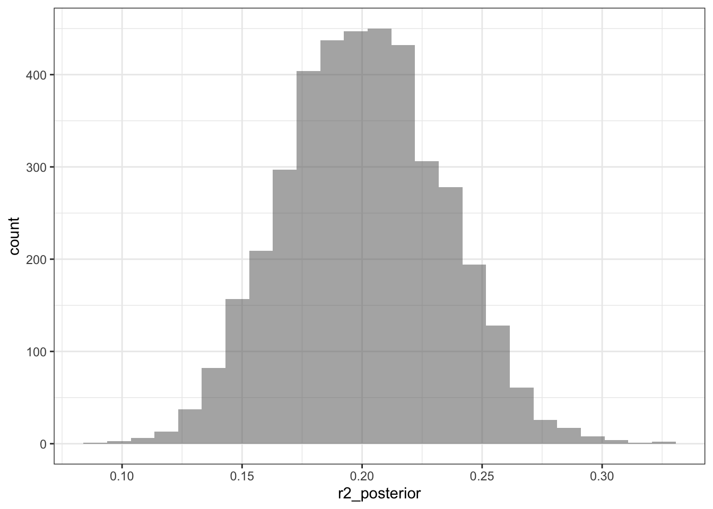
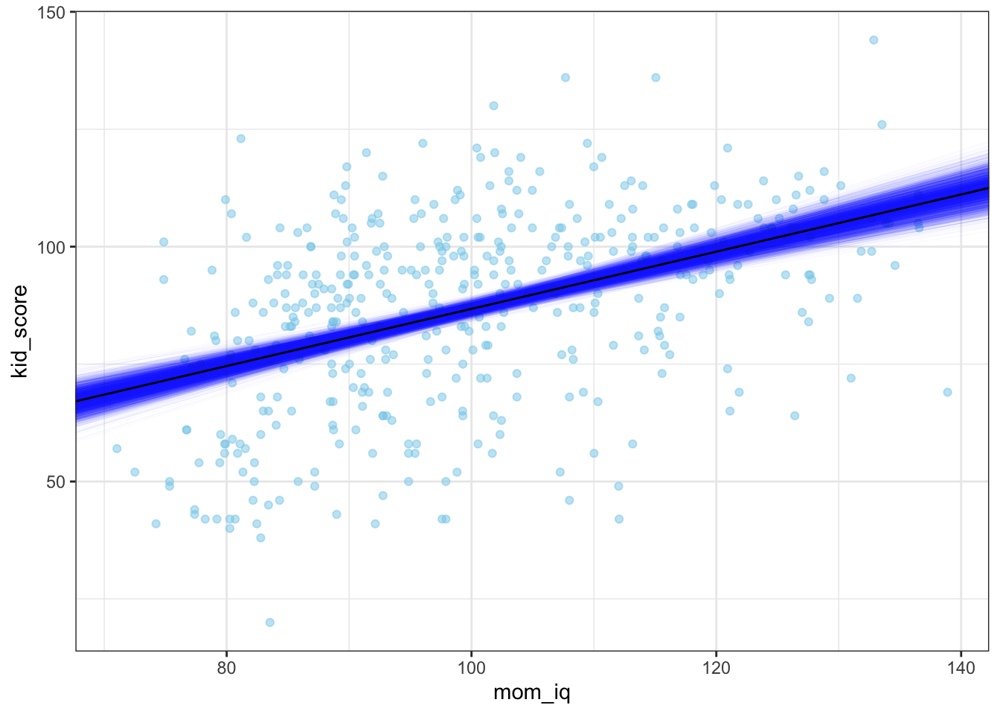

library(tidyverse)
library(ggformula)
library(broom)
library(broom.mixed)
library(performance)
library(modelsummary)
library(rstanarm)
library(loo)
library(tidybayes)
library(posterior)
library(bayesplot)
theme_set(theme_bw())
color_scheme_set(scheme = "brightblue")DataCamp: Bayesian Regression Modeling with rstanarm
Introduction to Bayesian Linear Models
A review of frequentist regression using lm(), an introduction to Bayesian regression using stan_glm(), and a comparison of the respective outputs.
Non-Bayesian linear regression
lm_model <- lm(kid_score ~ mom_iq, data = kidiq)summary(lm_model)
Call:
lm(formula = kid_score ~ mom_iq, data = kidiq)
Residuals:
Min 1Q Median 3Q Max
-56.75 -12.07 2.22 11.71 47.69
Coefficients:
Estimate Std. Error t value Pr(>|t|)
(Intercept) 25.7998 5.9174 4.36 0.000016 ***
mom_iq 0.6100 0.0585 10.42 < 0.0000000000000002 ***
---
Signif. codes: 0 '***' 0.001 '**' 0.01 '*' 0.05 '.' 0.1 ' ' 1
Residual standard error: 18.3 on 432 degrees of freedom
Multiple R-squared: 0.201, Adjusted R-squared: 0.199
F-statistic: 109 on 1 and 432 DF, p-value: <0.0000000000000002tidy(lm_model)# A tibble: 2 × 5
term estimate std.error statistic p.value
<chr> <dbl> <dbl> <dbl> <dbl>
1 (Intercept) 25.8 5.92 4.36 1.63e- 5
2 mom_iq 0.610 0.0585 10.4 7.66e-23Bayesian linear regression
stan_model <- stan_glm(kid_score ~ mom_iq, data = kidiq)
SAMPLING FOR MODEL 'continuous' NOW (CHAIN 1).
Chain 1:
Chain 1: Gradient evaluation took 3.2e-05 seconds
Chain 1: 1000 transitions using 10 leapfrog steps per transition would take 0.32 seconds.
Chain 1: Adjust your expectations accordingly!
Chain 1:
Chain 1:
Chain 1: Iteration: 1 / 2000 [ 0%] (Warmup)
Chain 1: Iteration: 200 / 2000 [ 10%] (Warmup)
Chain 1: Iteration: 400 / 2000 [ 20%] (Warmup)
Chain 1: Iteration: 600 / 2000 [ 30%] (Warmup)
Chain 1: Iteration: 800 / 2000 [ 40%] (Warmup)
Chain 1: Iteration: 1000 / 2000 [ 50%] (Warmup)
Chain 1: Iteration: 1001 / 2000 [ 50%] (Sampling)
Chain 1: Iteration: 1200 / 2000 [ 60%] (Sampling)
Chain 1: Iteration: 1400 / 2000 [ 70%] (Sampling)
Chain 1: Iteration: 1600 / 2000 [ 80%] (Sampling)
Chain 1: Iteration: 1800 / 2000 [ 90%] (Sampling)
Chain 1: Iteration: 2000 / 2000 [100%] (Sampling)
Chain 1:
Chain 1: Elapsed Time: 0.021 seconds (Warm-up)
Chain 1: 0.04 seconds (Sampling)
Chain 1: 0.061 seconds (Total)
Chain 1:
SAMPLING FOR MODEL 'continuous' NOW (CHAIN 2).
Chain 2:
Chain 2: Gradient evaluation took 6e-06 seconds
Chain 2: 1000 transitions using 10 leapfrog steps per transition would take 0.06 seconds.
Chain 2: Adjust your expectations accordingly!
Chain 2:
Chain 2:
Chain 2: Iteration: 1 / 2000 [ 0%] (Warmup)
Chain 2: Iteration: 200 / 2000 [ 10%] (Warmup)
Chain 2: Iteration: 400 / 2000 [ 20%] (Warmup)
Chain 2: Iteration: 600 / 2000 [ 30%] (Warmup)
Chain 2: Iteration: 800 / 2000 [ 40%] (Warmup)
Chain 2: Iteration: 1000 / 2000 [ 50%] (Warmup)
Chain 2: Iteration: 1001 / 2000 [ 50%] (Sampling)
Chain 2: Iteration: 1200 / 2000 [ 60%] (Sampling)
Chain 2: Iteration: 1400 / 2000 [ 70%] (Sampling)
Chain 2: Iteration: 1600 / 2000 [ 80%] (Sampling)
Chain 2: Iteration: 1800 / 2000 [ 90%] (Sampling)
Chain 2: Iteration: 2000 / 2000 [100%] (Sampling)
Chain 2:
Chain 2: Elapsed Time: 0.026 seconds (Warm-up)
Chain 2: 0.045 seconds (Sampling)
Chain 2: 0.071 seconds (Total)
Chain 2:
SAMPLING FOR MODEL 'continuous' NOW (CHAIN 3).
Chain 3:
Chain 3: Gradient evaluation took 9e-06 seconds
Chain 3: 1000 transitions using 10 leapfrog steps per transition would take 0.09 seconds.
Chain 3: Adjust your expectations accordingly!
Chain 3:
Chain 3:
Chain 3: Iteration: 1 / 2000 [ 0%] (Warmup)
Chain 3: Iteration: 200 / 2000 [ 10%] (Warmup)
Chain 3: Iteration: 400 / 2000 [ 20%] (Warmup)
Chain 3: Iteration: 600 / 2000 [ 30%] (Warmup)
Chain 3: Iteration: 800 / 2000 [ 40%] (Warmup)
Chain 3: Iteration: 1000 / 2000 [ 50%] (Warmup)
Chain 3: Iteration: 1001 / 2000 [ 50%] (Sampling)
Chain 3: Iteration: 1200 / 2000 [ 60%] (Sampling)
Chain 3: Iteration: 1400 / 2000 [ 70%] (Sampling)
Chain 3: Iteration: 1600 / 2000 [ 80%] (Sampling)
Chain 3: Iteration: 1800 / 2000 [ 90%] (Sampling)
Chain 3: Iteration: 2000 / 2000 [100%] (Sampling)
Chain 3:
Chain 3: Elapsed Time: 0.02 seconds (Warm-up)
Chain 3: 0.042 seconds (Sampling)
Chain 3: 0.062 seconds (Total)
Chain 3:
SAMPLING FOR MODEL 'continuous' NOW (CHAIN 4).
Chain 4:
Chain 4: Gradient evaluation took 5e-06 seconds
Chain 4: 1000 transitions using 10 leapfrog steps per transition would take 0.05 seconds.
Chain 4: Adjust your expectations accordingly!
Chain 4:
Chain 4:
Chain 4: Iteration: 1 / 2000 [ 0%] (Warmup)
Chain 4: Iteration: 200 / 2000 [ 10%] (Warmup)
Chain 4: Iteration: 400 / 2000 [ 20%] (Warmup)
Chain 4: Iteration: 600 / 2000 [ 30%] (Warmup)
Chain 4: Iteration: 800 / 2000 [ 40%] (Warmup)
Chain 4: Iteration: 1000 / 2000 [ 50%] (Warmup)
Chain 4: Iteration: 1001 / 2000 [ 50%] (Sampling)
Chain 4: Iteration: 1200 / 2000 [ 60%] (Sampling)
Chain 4: Iteration: 1400 / 2000 [ 70%] (Sampling)
Chain 4: Iteration: 1600 / 2000 [ 80%] (Sampling)
Chain 4: Iteration: 1800 / 2000 [ 90%] (Sampling)
Chain 4: Iteration: 2000 / 2000 [100%] (Sampling)
Chain 4:
Chain 4: Elapsed Time: 0.023 seconds (Warm-up)
Chain 4: 0.044 seconds (Sampling)
Chain 4: 0.067 seconds (Total)
Chain 4: summary(stan_model)
Model Info:
function: stan_glm
family: gaussian [identity]
formula: kid_score ~ mom_iq
algorithm: sampling
sample: 4000 (posterior sample size)
priors: see help('prior_summary')
observations: 434
predictors: 2
Estimates:
mean sd 10% 50% 90%
(Intercept) 25.8 5.9 18.2 25.7 33.3
mom_iq 0.6 0.1 0.5 0.6 0.7
sigma 18.3 0.6 17.5 18.3 19.1
Fit Diagnostics:
mean sd 10% 50% 90%
mean_PPD 86.8 1.2 85.3 86.8 88.4
The mean_ppd is the sample average posterior predictive distribution of the outcome variable (for details see help('summary.stanreg')).
MCMC diagnostics
mcse Rhat n_eff
(Intercept) 0.1 1.0 3613
mom_iq 0.0 1.0 3600
sigma 0.0 1.0 4191
mean_PPD 0.0 1.0 4028
log-posterior 0.0 1.0 2187
For each parameter, mcse is Monte Carlo standard error, n_eff is a crude measure of effective sample size, and Rhat is the potential scale reduction factor on split chains (at convergence Rhat=1).tidy(stan_model)# A tibble: 2 × 3
term estimate std.error
<chr> <dbl> <dbl>
1 (Intercept) 25.7 6.08
2 mom_iq 0.610 0.0598Assessing model convergence
Rhat should be less than 1.1
Comparing frequentist and Bayesian inferences
- Frequentist inference: data are random, parameters are fixed; p-value = P(random data/sample/test statistic | null hypothesis/parameter = 0)
- Bayesian inference: data are fixed, parameters are random; posterior = P(parameter | observed data/sample)
- Use credible interval of posterior distribution to check if parameter is diff from zero (or any other hypothesis)
# probability that true param value is in interval
posterior_interval(stan_model, prob = 0.95) 2.5% 97.5%
(Intercept) 14.4515 37.2936
mom_iq 0.4983 0.7212
sigma 17.1717 19.5836# probability that interval contains true param value
confint(lm_model, level = 0.95) 2.5 % 97.5 %
(Intercept) 14.169 37.430
mom_iq 0.495 0.725posterior <- spread_draws(stan_model, mom_iq)
mean(between(posterior$mom_iq, 0.60, 0.65))[1] 0.3152Modifying a Bayesian Model
Learn how to modify your Bayesian model including changing the number and length of chains, changing prior distributions, and adding predictors.
Changing number and length of chains
stan_model <- stan_glm(kid_score ~ mom_iq, data = kidiq, chains = 2, iter = 1000, warmup = 500)
SAMPLING FOR MODEL 'continuous' NOW (CHAIN 1).
Chain 1:
Chain 1: Gradient evaluation took 1.4e-05 seconds
Chain 1: 1000 transitions using 10 leapfrog steps per transition would take 0.14 seconds.
Chain 1: Adjust your expectations accordingly!
Chain 1:
Chain 1:
Chain 1: Iteration: 1 / 1000 [ 0%] (Warmup)
Chain 1: Iteration: 100 / 1000 [ 10%] (Warmup)
Chain 1: Iteration: 200 / 1000 [ 20%] (Warmup)
Chain 1: Iteration: 300 / 1000 [ 30%] (Warmup)
Chain 1: Iteration: 400 / 1000 [ 40%] (Warmup)
Chain 1: Iteration: 500 / 1000 [ 50%] (Warmup)
Chain 1: Iteration: 501 / 1000 [ 50%] (Sampling)
Chain 1: Iteration: 600 / 1000 [ 60%] (Sampling)
Chain 1: Iteration: 700 / 1000 [ 70%] (Sampling)
Chain 1: Iteration: 800 / 1000 [ 80%] (Sampling)
Chain 1: Iteration: 900 / 1000 [ 90%] (Sampling)
Chain 1: Iteration: 1000 / 1000 [100%] (Sampling)
Chain 1:
Chain 1: Elapsed Time: 0.012 seconds (Warm-up)
Chain 1: 0.022 seconds (Sampling)
Chain 1: 0.034 seconds (Total)
Chain 1:
SAMPLING FOR MODEL 'continuous' NOW (CHAIN 2).
Chain 2:
Chain 2: Gradient evaluation took 5e-06 seconds
Chain 2: 1000 transitions using 10 leapfrog steps per transition would take 0.05 seconds.
Chain 2: Adjust your expectations accordingly!
Chain 2:
Chain 2:
Chain 2: Iteration: 1 / 1000 [ 0%] (Warmup)
Chain 2: Iteration: 100 / 1000 [ 10%] (Warmup)
Chain 2: Iteration: 200 / 1000 [ 20%] (Warmup)
Chain 2: Iteration: 300 / 1000 [ 30%] (Warmup)
Chain 2: Iteration: 400 / 1000 [ 40%] (Warmup)
Chain 2: Iteration: 500 / 1000 [ 50%] (Warmup)
Chain 2: Iteration: 501 / 1000 [ 50%] (Sampling)
Chain 2: Iteration: 600 / 1000 [ 60%] (Sampling)
Chain 2: Iteration: 700 / 1000 [ 70%] (Sampling)
Chain 2: Iteration: 800 / 1000 [ 80%] (Sampling)
Chain 2: Iteration: 900 / 1000 [ 90%] (Sampling)
Chain 2: Iteration: 1000 / 1000 [100%] (Sampling)
Chain 2:
Chain 2: Elapsed Time: 0.013 seconds (Warm-up)
Chain 2: 0.022 seconds (Sampling)
Chain 2: 0.035 seconds (Total)
Chain 2: summary(stan_model)
Model Info:
function: stan_glm
family: gaussian [identity]
formula: kid_score ~ mom_iq
algorithm: sampling
sample: 1000 (posterior sample size)
priors: see help('prior_summary')
observations: 434
predictors: 2
Estimates:
mean sd 10% 50% 90%
(Intercept) 25.8 5.9 18.0 25.9 33.5
mom_iq 0.6 0.1 0.5 0.6 0.7
sigma 18.3 0.6 17.5 18.3 19.1
Fit Diagnostics:
mean sd 10% 50% 90%
mean_PPD 86.8 1.2 85.4 86.8 88.4
The mean_ppd is the sample average posterior predictive distribution of the outcome variable (for details see help('summary.stanreg')).
MCMC diagnostics
mcse Rhat n_eff
(Intercept) 0.2 1.0 1069
mom_iq 0.0 1.0 1062
sigma 0.0 1.0 880
mean_PPD 0.0 1.0 1001
log-posterior 0.1 1.0 465
For each parameter, mcse is Monte Carlo standard error, n_eff is a crude measure of effective sample size, and Rhat is the potential scale reduction factor on split chains (at convergence Rhat=1).Changing prior distributions
prior_summary(stan_model)Priors for model 'stan_model'
------
Intercept (after predictors centered)
Specified prior:
~ normal(location = 87, scale = 2.5)
Adjusted prior:
~ normal(location = 87, scale = 51)
Coefficients
Specified prior:
~ normal(location = 0, scale = 2.5)
Adjusted prior:
~ normal(location = 0, scale = 3.4)
Auxiliary (sigma)
Specified prior:
~ exponential(rate = 1)
Adjusted prior:
~ exponential(rate = 0.049)
------
See help('prior_summary.stanreg') for more detailsAdjusted scale is 2.5 * sd(y) for the intercept, and 2.5 * sd(y)/sd(x) for the coefficients:
2.5 * sd(kidiq$kid_score) # intercept[1] 51.032.5 * sd(kidiq$kid_score) / sd(kidiq$mom_iq) # coefficient[1] 3.402Auto-scale can be turned off:
# n.b.: autoscale = FALSE is the default when manually specifying priors
stan_model <- stan_glm(kid_score ~ mom_iq, data = kidiq,
prior_intercept = normal(),
prior = normal(),
prior_aux = exponential())
SAMPLING FOR MODEL 'continuous' NOW (CHAIN 1).
Chain 1:
Chain 1: Gradient evaluation took 1e-05 seconds
Chain 1: 1000 transitions using 10 leapfrog steps per transition would take 0.1 seconds.
Chain 1: Adjust your expectations accordingly!
Chain 1:
Chain 1:
Chain 1: Iteration: 1 / 2000 [ 0%] (Warmup)
Chain 1: Iteration: 200 / 2000 [ 10%] (Warmup)
Chain 1: Iteration: 400 / 2000 [ 20%] (Warmup)
Chain 1: Iteration: 600 / 2000 [ 30%] (Warmup)
Chain 1: Iteration: 800 / 2000 [ 40%] (Warmup)
Chain 1: Iteration: 1000 / 2000 [ 50%] (Warmup)
Chain 1: Iteration: 1001 / 2000 [ 50%] (Sampling)
Chain 1: Iteration: 1200 / 2000 [ 60%] (Sampling)
Chain 1: Iteration: 1400 / 2000 [ 70%] (Sampling)
Chain 1: Iteration: 1600 / 2000 [ 80%] (Sampling)
Chain 1: Iteration: 1800 / 2000 [ 90%] (Sampling)
Chain 1: Iteration: 2000 / 2000 [100%] (Sampling)
Chain 1:
Chain 1: Elapsed Time: 0.027 seconds (Warm-up)
Chain 1: 0.049 seconds (Sampling)
Chain 1: 0.076 seconds (Total)
Chain 1:
SAMPLING FOR MODEL 'continuous' NOW (CHAIN 2).
Chain 2:
Chain 2: Gradient evaluation took 6e-06 seconds
Chain 2: 1000 transitions using 10 leapfrog steps per transition would take 0.06 seconds.
Chain 2: Adjust your expectations accordingly!
Chain 2:
Chain 2:
Chain 2: Iteration: 1 / 2000 [ 0%] (Warmup)
Chain 2: Iteration: 200 / 2000 [ 10%] (Warmup)
Chain 2: Iteration: 400 / 2000 [ 20%] (Warmup)
Chain 2: Iteration: 600 / 2000 [ 30%] (Warmup)
Chain 2: Iteration: 800 / 2000 [ 40%] (Warmup)
Chain 2: Iteration: 1000 / 2000 [ 50%] (Warmup)
Chain 2: Iteration: 1001 / 2000 [ 50%] (Sampling)
Chain 2: Iteration: 1200 / 2000 [ 60%] (Sampling)
Chain 2: Iteration: 1400 / 2000 [ 70%] (Sampling)
Chain 2: Iteration: 1600 / 2000 [ 80%] (Sampling)
Chain 2: Iteration: 1800 / 2000 [ 90%] (Sampling)
Chain 2: Iteration: 2000 / 2000 [100%] (Sampling)
Chain 2:
Chain 2: Elapsed Time: 0.027 seconds (Warm-up)
Chain 2: 0.056 seconds (Sampling)
Chain 2: 0.083 seconds (Total)
Chain 2:
SAMPLING FOR MODEL 'continuous' NOW (CHAIN 3).
Chain 3:
Chain 3: Gradient evaluation took 7e-06 seconds
Chain 3: 1000 transitions using 10 leapfrog steps per transition would take 0.07 seconds.
Chain 3: Adjust your expectations accordingly!
Chain 3:
Chain 3:
Chain 3: Iteration: 1 / 2000 [ 0%] (Warmup)
Chain 3: Iteration: 200 / 2000 [ 10%] (Warmup)
Chain 3: Iteration: 400 / 2000 [ 20%] (Warmup)
Chain 3: Iteration: 600 / 2000 [ 30%] (Warmup)
Chain 3: Iteration: 800 / 2000 [ 40%] (Warmup)
Chain 3: Iteration: 1000 / 2000 [ 50%] (Warmup)
Chain 3: Iteration: 1001 / 2000 [ 50%] (Sampling)
Chain 3: Iteration: 1200 / 2000 [ 60%] (Sampling)
Chain 3: Iteration: 1400 / 2000 [ 70%] (Sampling)
Chain 3: Iteration: 1600 / 2000 [ 80%] (Sampling)
Chain 3: Iteration: 1800 / 2000 [ 90%] (Sampling)
Chain 3: Iteration: 2000 / 2000 [100%] (Sampling)
Chain 3:
Chain 3: Elapsed Time: 0.031 seconds (Warm-up)
Chain 3: 0.052 seconds (Sampling)
Chain 3: 0.083 seconds (Total)
Chain 3:
SAMPLING FOR MODEL 'continuous' NOW (CHAIN 4).
Chain 4:
Chain 4: Gradient evaluation took 6e-06 seconds
Chain 4: 1000 transitions using 10 leapfrog steps per transition would take 0.06 seconds.
Chain 4: Adjust your expectations accordingly!
Chain 4:
Chain 4:
Chain 4: Iteration: 1 / 2000 [ 0%] (Warmup)
Chain 4: Iteration: 200 / 2000 [ 10%] (Warmup)
Chain 4: Iteration: 400 / 2000 [ 20%] (Warmup)
Chain 4: Iteration: 600 / 2000 [ 30%] (Warmup)
Chain 4: Iteration: 800 / 2000 [ 40%] (Warmup)
Chain 4: Iteration: 1000 / 2000 [ 50%] (Warmup)
Chain 4: Iteration: 1001 / 2000 [ 50%] (Sampling)
Chain 4: Iteration: 1200 / 2000 [ 60%] (Sampling)
Chain 4: Iteration: 1400 / 2000 [ 70%] (Sampling)
Chain 4: Iteration: 1600 / 2000 [ 80%] (Sampling)
Chain 4: Iteration: 1800 / 2000 [ 90%] (Sampling)
Chain 4: Iteration: 2000 / 2000 [100%] (Sampling)
Chain 4:
Chain 4: Elapsed Time: 0.03 seconds (Warm-up)
Chain 4: 0.052 seconds (Sampling)
Chain 4: 0.082 seconds (Total)
Chain 4: prior_summary(stan_model)Priors for model 'stan_model'
------
Intercept (after predictors centered)
~ normal(location = 0, scale = 2.5)
Coefficients
~ normal(location = 0, scale = 2.5)
Auxiliary (sigma)
~ exponential(rate = 1)
------
See help('prior_summary.stanreg') for more detailsstan_model <- stan_glm(kid_score ~ mom_iq, data = kidiq,
prior_intercept = normal(location = 3, scale = 2),
prior = cauchy(location = 0, scale = 1))
SAMPLING FOR MODEL 'continuous' NOW (CHAIN 1).
Chain 1:
Chain 1: Gradient evaluation took 1.7e-05 seconds
Chain 1: 1000 transitions using 10 leapfrog steps per transition would take 0.17 seconds.
Chain 1: Adjust your expectations accordingly!
Chain 1:
Chain 1:
Chain 1: Iteration: 1 / 2000 [ 0%] (Warmup)
Chain 1: Iteration: 200 / 2000 [ 10%] (Warmup)
Chain 1: Iteration: 400 / 2000 [ 20%] (Warmup)
Chain 1: Iteration: 600 / 2000 [ 30%] (Warmup)
Chain 1: Iteration: 800 / 2000 [ 40%] (Warmup)
Chain 1: Iteration: 1000 / 2000 [ 50%] (Warmup)
Chain 1: Iteration: 1001 / 2000 [ 50%] (Sampling)
Chain 1: Iteration: 1200 / 2000 [ 60%] (Sampling)
Chain 1: Iteration: 1400 / 2000 [ 70%] (Sampling)
Chain 1: Iteration: 1600 / 2000 [ 80%] (Sampling)
Chain 1: Iteration: 1800 / 2000 [ 90%] (Sampling)
Chain 1: Iteration: 2000 / 2000 [100%] (Sampling)
Chain 1:
Chain 1: Elapsed Time: 0.038 seconds (Warm-up)
Chain 1: 0.05 seconds (Sampling)
Chain 1: 0.088 seconds (Total)
Chain 1:
SAMPLING FOR MODEL 'continuous' NOW (CHAIN 2).
Chain 2:
Chain 2: Gradient evaluation took 6e-06 seconds
Chain 2: 1000 transitions using 10 leapfrog steps per transition would take 0.06 seconds.
Chain 2: Adjust your expectations accordingly!
Chain 2:
Chain 2:
Chain 2: Iteration: 1 / 2000 [ 0%] (Warmup)
Chain 2: Iteration: 200 / 2000 [ 10%] (Warmup)
Chain 2: Iteration: 400 / 2000 [ 20%] (Warmup)
Chain 2: Iteration: 600 / 2000 [ 30%] (Warmup)
Chain 2: Iteration: 800 / 2000 [ 40%] (Warmup)
Chain 2: Iteration: 1000 / 2000 [ 50%] (Warmup)
Chain 2: Iteration: 1001 / 2000 [ 50%] (Sampling)
Chain 2: Iteration: 1200 / 2000 [ 60%] (Sampling)
Chain 2: Iteration: 1400 / 2000 [ 70%] (Sampling)
Chain 2: Iteration: 1600 / 2000 [ 80%] (Sampling)
Chain 2: Iteration: 1800 / 2000 [ 90%] (Sampling)
Chain 2: Iteration: 2000 / 2000 [100%] (Sampling)
Chain 2:
Chain 2: Elapsed Time: 0.034 seconds (Warm-up)
Chain 2: 0.054 seconds (Sampling)
Chain 2: 0.088 seconds (Total)
Chain 2:
SAMPLING FOR MODEL 'continuous' NOW (CHAIN 3).
Chain 3:
Chain 3: Gradient evaluation took 6e-06 seconds
Chain 3: 1000 transitions using 10 leapfrog steps per transition would take 0.06 seconds.
Chain 3: Adjust your expectations accordingly!
Chain 3:
Chain 3:
Chain 3: Iteration: 1 / 2000 [ 0%] (Warmup)
Chain 3: Iteration: 200 / 2000 [ 10%] (Warmup)
Chain 3: Iteration: 400 / 2000 [ 20%] (Warmup)
Chain 3: Iteration: 600 / 2000 [ 30%] (Warmup)
Chain 3: Iteration: 800 / 2000 [ 40%] (Warmup)
Chain 3: Iteration: 1000 / 2000 [ 50%] (Warmup)
Chain 3: Iteration: 1001 / 2000 [ 50%] (Sampling)
Chain 3: Iteration: 1200 / 2000 [ 60%] (Sampling)
Chain 3: Iteration: 1400 / 2000 [ 70%] (Sampling)
Chain 3: Iteration: 1600 / 2000 [ 80%] (Sampling)
Chain 3: Iteration: 1800 / 2000 [ 90%] (Sampling)
Chain 3: Iteration: 2000 / 2000 [100%] (Sampling)
Chain 3:
Chain 3: Elapsed Time: 0.039 seconds (Warm-up)
Chain 3: 0.058 seconds (Sampling)
Chain 3: 0.097 seconds (Total)
Chain 3:
SAMPLING FOR MODEL 'continuous' NOW (CHAIN 4).
Chain 4:
Chain 4: Gradient evaluation took 4e-06 seconds
Chain 4: 1000 transitions using 10 leapfrog steps per transition would take 0.04 seconds.
Chain 4: Adjust your expectations accordingly!
Chain 4:
Chain 4:
Chain 4: Iteration: 1 / 2000 [ 0%] (Warmup)
Chain 4: Iteration: 200 / 2000 [ 10%] (Warmup)
Chain 4: Iteration: 400 / 2000 [ 20%] (Warmup)
Chain 4: Iteration: 600 / 2000 [ 30%] (Warmup)
Chain 4: Iteration: 800 / 2000 [ 40%] (Warmup)
Chain 4: Iteration: 1000 / 2000 [ 50%] (Warmup)
Chain 4: Iteration: 1001 / 2000 [ 50%] (Sampling)
Chain 4: Iteration: 1200 / 2000 [ 60%] (Sampling)
Chain 4: Iteration: 1400 / 2000 [ 70%] (Sampling)
Chain 4: Iteration: 1600 / 2000 [ 80%] (Sampling)
Chain 4: Iteration: 1800 / 2000 [ 90%] (Sampling)
Chain 4: Iteration: 2000 / 2000 [100%] (Sampling)
Chain 4:
Chain 4: Elapsed Time: 0.033 seconds (Warm-up)
Chain 4: 0.053 seconds (Sampling)
Chain 4: 0.086 seconds (Total)
Chain 4: prior_summary(stan_model)Priors for model 'stan_model'
------
Intercept (after predictors centered)
~ normal(location = 3, scale = 2)
Coefficients
~ cauchy(location = 0, scale = 1)
Auxiliary (sigma)
Specified prior:
~ exponential(rate = 1)
Adjusted prior:
~ exponential(rate = 0.049)
------
See help('prior_summary.stanreg') for more detailsA prior distribution should reflect that expected distribution of the parameter it is applied to!
A prior can be seen as having more data in addition to the observed ones; specifying a highly informative prior is like having a lot of additional data, therefore if we don’t have a lot of observed data, it can strongly influence the posterior!
Flat priors:
stan_model <- stan_glm(kid_score ~ mom_iq, data = kidiq,
prior_intercept = NULL,
prior = NULL,
prior_aux = NULL)
SAMPLING FOR MODEL 'continuous' NOW (CHAIN 1).
Chain 1:
Chain 1: Gradient evaluation took 6e-06 seconds
Chain 1: 1000 transitions using 10 leapfrog steps per transition would take 0.06 seconds.
Chain 1: Adjust your expectations accordingly!
Chain 1:
Chain 1:
Chain 1: Iteration: 1 / 2000 [ 0%] (Warmup)
Chain 1: Iteration: 200 / 2000 [ 10%] (Warmup)
Chain 1: Iteration: 400 / 2000 [ 20%] (Warmup)
Chain 1: Iteration: 600 / 2000 [ 30%] (Warmup)
Chain 1: Iteration: 800 / 2000 [ 40%] (Warmup)
Chain 1: Iteration: 1000 / 2000 [ 50%] (Warmup)
Chain 1: Iteration: 1001 / 2000 [ 50%] (Sampling)
Chain 1: Iteration: 1200 / 2000 [ 60%] (Sampling)
Chain 1: Iteration: 1400 / 2000 [ 70%] (Sampling)
Chain 1: Iteration: 1600 / 2000 [ 80%] (Sampling)
Chain 1: Iteration: 1800 / 2000 [ 90%] (Sampling)
Chain 1: Iteration: 2000 / 2000 [100%] (Sampling)
Chain 1:
Chain 1: Elapsed Time: 0.018 seconds (Warm-up)
Chain 1: 0.04 seconds (Sampling)
Chain 1: 0.058 seconds (Total)
Chain 1:
SAMPLING FOR MODEL 'continuous' NOW (CHAIN 2).
Chain 2:
Chain 2: Gradient evaluation took 4e-06 seconds
Chain 2: 1000 transitions using 10 leapfrog steps per transition would take 0.04 seconds.
Chain 2: Adjust your expectations accordingly!
Chain 2:
Chain 2:
Chain 2: Iteration: 1 / 2000 [ 0%] (Warmup)
Chain 2: Iteration: 200 / 2000 [ 10%] (Warmup)
Chain 2: Iteration: 400 / 2000 [ 20%] (Warmup)
Chain 2: Iteration: 600 / 2000 [ 30%] (Warmup)
Chain 2: Iteration: 800 / 2000 [ 40%] (Warmup)
Chain 2: Iteration: 1000 / 2000 [ 50%] (Warmup)
Chain 2: Iteration: 1001 / 2000 [ 50%] (Sampling)
Chain 2: Iteration: 1200 / 2000 [ 60%] (Sampling)
Chain 2: Iteration: 1400 / 2000 [ 70%] (Sampling)
Chain 2: Iteration: 1600 / 2000 [ 80%] (Sampling)
Chain 2: Iteration: 1800 / 2000 [ 90%] (Sampling)
Chain 2: Iteration: 2000 / 2000 [100%] (Sampling)
Chain 2:
Chain 2: Elapsed Time: 0.016 seconds (Warm-up)
Chain 2: 0.041 seconds (Sampling)
Chain 2: 0.057 seconds (Total)
Chain 2:
SAMPLING FOR MODEL 'continuous' NOW (CHAIN 3).
Chain 3:
Chain 3: Gradient evaluation took 2e-06 seconds
Chain 3: 1000 transitions using 10 leapfrog steps per transition would take 0.02 seconds.
Chain 3: Adjust your expectations accordingly!
Chain 3:
Chain 3:
Chain 3: Iteration: 1 / 2000 [ 0%] (Warmup)
Chain 3: Iteration: 200 / 2000 [ 10%] (Warmup)
Chain 3: Iteration: 400 / 2000 [ 20%] (Warmup)
Chain 3: Iteration: 600 / 2000 [ 30%] (Warmup)
Chain 3: Iteration: 800 / 2000 [ 40%] (Warmup)
Chain 3: Iteration: 1000 / 2000 [ 50%] (Warmup)
Chain 3: Iteration: 1001 / 2000 [ 50%] (Sampling)
Chain 3: Iteration: 1200 / 2000 [ 60%] (Sampling)
Chain 3: Iteration: 1400 / 2000 [ 70%] (Sampling)
Chain 3: Iteration: 1600 / 2000 [ 80%] (Sampling)
Chain 3: Iteration: 1800 / 2000 [ 90%] (Sampling)
Chain 3: Iteration: 2000 / 2000 [100%] (Sampling)
Chain 3:
Chain 3: Elapsed Time: 0.018 seconds (Warm-up)
Chain 3: 0.041 seconds (Sampling)
Chain 3: 0.059 seconds (Total)
Chain 3:
SAMPLING FOR MODEL 'continuous' NOW (CHAIN 4).
Chain 4:
Chain 4: Gradient evaluation took 3e-06 seconds
Chain 4: 1000 transitions using 10 leapfrog steps per transition would take 0.03 seconds.
Chain 4: Adjust your expectations accordingly!
Chain 4:
Chain 4:
Chain 4: Iteration: 1 / 2000 [ 0%] (Warmup)
Chain 4: Iteration: 200 / 2000 [ 10%] (Warmup)
Chain 4: Iteration: 400 / 2000 [ 20%] (Warmup)
Chain 4: Iteration: 600 / 2000 [ 30%] (Warmup)
Chain 4: Iteration: 800 / 2000 [ 40%] (Warmup)
Chain 4: Iteration: 1000 / 2000 [ 50%] (Warmup)
Chain 4: Iteration: 1001 / 2000 [ 50%] (Sampling)
Chain 4: Iteration: 1200 / 2000 [ 60%] (Sampling)
Chain 4: Iteration: 1400 / 2000 [ 70%] (Sampling)
Chain 4: Iteration: 1600 / 2000 [ 80%] (Sampling)
Chain 4: Iteration: 1800 / 2000 [ 90%] (Sampling)
Chain 4: Iteration: 2000 / 2000 [100%] (Sampling)
Chain 4:
Chain 4: Elapsed Time: 0.018 seconds (Warm-up)
Chain 4: 0.041 seconds (Sampling)
Chain 4: 0.059 seconds (Total)
Chain 4: prior_summary(stan_model)Priors for model 'stan_model'
------
Intercept (after predictors centered)
~ flat
Coefficients
~ flat
Auxiliary (sigma)
~ flat
------
See help('prior_summary.stanreg') for more detailsmodelsummary(list("frequentist" = lm_model, "bayesian" = stan_model))Warning:
`modelsummary` uses the `performance` package to extract goodness-of-fit
statistics from models of this class. You can specify the statistics you wish
to compute by supplying a `metrics` argument to `modelsummary`, which will then
push it forward to `performance`. Acceptable values are: "all", "common",
"none", or a character vector of metrics names. For example: `modelsummary(mod,
metrics = c("RMSE", "R2")` Note that some metrics are computationally
expensive. See `?performance::performance` for details.
This warning appears once per session.| frequentist | bayesian | |
|---|---|---|
| (Intercept) | 25.800 | 25.783 |
| (5.917) | ||
| mom_iq | 0.610 | 0.610 |
| (0.059) | ||
| Num.Obs. | 434 | 434 |
| R2 | 0.201 | 0.200 |
| R2 Adj. | 0.199 | 0.196 |
| AIC | 3757.2 | |
| BIC | 3769.4 | |
| Log.Lik. | −1875.608 | −1876.306 |
| F | 108.643 | |
| ELPD | −1878.5 | |
| ELPD s.e. | 14.5 | |
| LOOIC | 3757.0 | |
| LOOIC s.e. | 28.9 | |
| WAIC | 3757.0 | |
| RMSE | 18.22 | 18.22 |
Altering the estimation process
Estimation errors (like non-convergence) are threats to the validity of the parameter estimates
Divergent transitions:
stan_model <- stan_glm(kid_score ~ mom_iq, data = kidiq,
control = list(adapt_delta = 0.99)) # increase from 0.95 default
SAMPLING FOR MODEL 'continuous' NOW (CHAIN 1).
Chain 1:
Chain 1: Gradient evaluation took 1.4e-05 seconds
Chain 1: 1000 transitions using 10 leapfrog steps per transition would take 0.14 seconds.
Chain 1: Adjust your expectations accordingly!
Chain 1:
Chain 1:
Chain 1: Iteration: 1 / 2000 [ 0%] (Warmup)
Chain 1: Iteration: 200 / 2000 [ 10%] (Warmup)
Chain 1: Iteration: 400 / 2000 [ 20%] (Warmup)
Chain 1: Iteration: 600 / 2000 [ 30%] (Warmup)
Chain 1: Iteration: 800 / 2000 [ 40%] (Warmup)
Chain 1: Iteration: 1000 / 2000 [ 50%] (Warmup)
Chain 1: Iteration: 1001 / 2000 [ 50%] (Sampling)
Chain 1: Iteration: 1200 / 2000 [ 60%] (Sampling)
Chain 1: Iteration: 1400 / 2000 [ 70%] (Sampling)
Chain 1: Iteration: 1600 / 2000 [ 80%] (Sampling)
Chain 1: Iteration: 1800 / 2000 [ 90%] (Sampling)
Chain 1: Iteration: 2000 / 2000 [100%] (Sampling)
Chain 1:
Chain 1: Elapsed Time: 0.021 seconds (Warm-up)
Chain 1: 0.045 seconds (Sampling)
Chain 1: 0.066 seconds (Total)
Chain 1:
SAMPLING FOR MODEL 'continuous' NOW (CHAIN 2).
Chain 2:
Chain 2: Gradient evaluation took 5e-06 seconds
Chain 2: 1000 transitions using 10 leapfrog steps per transition would take 0.05 seconds.
Chain 2: Adjust your expectations accordingly!
Chain 2:
Chain 2:
Chain 2: Iteration: 1 / 2000 [ 0%] (Warmup)
Chain 2: Iteration: 200 / 2000 [ 10%] (Warmup)
Chain 2: Iteration: 400 / 2000 [ 20%] (Warmup)
Chain 2: Iteration: 600 / 2000 [ 30%] (Warmup)
Chain 2: Iteration: 800 / 2000 [ 40%] (Warmup)
Chain 2: Iteration: 1000 / 2000 [ 50%] (Warmup)
Chain 2: Iteration: 1001 / 2000 [ 50%] (Sampling)
Chain 2: Iteration: 1200 / 2000 [ 60%] (Sampling)
Chain 2: Iteration: 1400 / 2000 [ 70%] (Sampling)
Chain 2: Iteration: 1600 / 2000 [ 80%] (Sampling)
Chain 2: Iteration: 1800 / 2000 [ 90%] (Sampling)
Chain 2: Iteration: 2000 / 2000 [100%] (Sampling)
Chain 2:
Chain 2: Elapsed Time: 0.023 seconds (Warm-up)
Chain 2: 0.044 seconds (Sampling)
Chain 2: 0.067 seconds (Total)
Chain 2:
SAMPLING FOR MODEL 'continuous' NOW (CHAIN 3).
Chain 3:
Chain 3: Gradient evaluation took 9e-06 seconds
Chain 3: 1000 transitions using 10 leapfrog steps per transition would take 0.09 seconds.
Chain 3: Adjust your expectations accordingly!
Chain 3:
Chain 3:
Chain 3: Iteration: 1 / 2000 [ 0%] (Warmup)
Chain 3: Iteration: 200 / 2000 [ 10%] (Warmup)
Chain 3: Iteration: 400 / 2000 [ 20%] (Warmup)
Chain 3: Iteration: 600 / 2000 [ 30%] (Warmup)
Chain 3: Iteration: 800 / 2000 [ 40%] (Warmup)
Chain 3: Iteration: 1000 / 2000 [ 50%] (Warmup)
Chain 3: Iteration: 1001 / 2000 [ 50%] (Sampling)
Chain 3: Iteration: 1200 / 2000 [ 60%] (Sampling)
Chain 3: Iteration: 1400 / 2000 [ 70%] (Sampling)
Chain 3: Iteration: 1600 / 2000 [ 80%] (Sampling)
Chain 3: Iteration: 1800 / 2000 [ 90%] (Sampling)
Chain 3: Iteration: 2000 / 2000 [100%] (Sampling)
Chain 3:
Chain 3: Elapsed Time: 0.022 seconds (Warm-up)
Chain 3: 0.042 seconds (Sampling)
Chain 3: 0.064 seconds (Total)
Chain 3:
SAMPLING FOR MODEL 'continuous' NOW (CHAIN 4).
Chain 4:
Chain 4: Gradient evaluation took 5e-06 seconds
Chain 4: 1000 transitions using 10 leapfrog steps per transition would take 0.05 seconds.
Chain 4: Adjust your expectations accordingly!
Chain 4:
Chain 4:
Chain 4: Iteration: 1 / 2000 [ 0%] (Warmup)
Chain 4: Iteration: 200 / 2000 [ 10%] (Warmup)
Chain 4: Iteration: 400 / 2000 [ 20%] (Warmup)
Chain 4: Iteration: 600 / 2000 [ 30%] (Warmup)
Chain 4: Iteration: 800 / 2000 [ 40%] (Warmup)
Chain 4: Iteration: 1000 / 2000 [ 50%] (Warmup)
Chain 4: Iteration: 1001 / 2000 [ 50%] (Sampling)
Chain 4: Iteration: 1200 / 2000 [ 60%] (Sampling)
Chain 4: Iteration: 1400 / 2000 [ 70%] (Sampling)
Chain 4: Iteration: 1600 / 2000 [ 80%] (Sampling)
Chain 4: Iteration: 1800 / 2000 [ 90%] (Sampling)
Chain 4: Iteration: 2000 / 2000 [100%] (Sampling)
Chain 4:
Chain 4: Elapsed Time: 0.025 seconds (Warm-up)
Chain 4: 0.043 seconds (Sampling)
Chain 4: 0.068 seconds (Total)
Chain 4: Exceeding the max treedepth:
stan_model <- stan_glm(kid_score ~ mom_iq, data = kidiq,
control = list(max_treedepth = 15)) # increase from 10 default
SAMPLING FOR MODEL 'continuous' NOW (CHAIN 1).
Chain 1:
Chain 1: Gradient evaluation took 1e-05 seconds
Chain 1: 1000 transitions using 10 leapfrog steps per transition would take 0.1 seconds.
Chain 1: Adjust your expectations accordingly!
Chain 1:
Chain 1:
Chain 1: Iteration: 1 / 2000 [ 0%] (Warmup)
Chain 1: Iteration: 200 / 2000 [ 10%] (Warmup)
Chain 1: Iteration: 400 / 2000 [ 20%] (Warmup)
Chain 1: Iteration: 600 / 2000 [ 30%] (Warmup)
Chain 1: Iteration: 800 / 2000 [ 40%] (Warmup)
Chain 1: Iteration: 1000 / 2000 [ 50%] (Warmup)
Chain 1: Iteration: 1001 / 2000 [ 50%] (Sampling)
Chain 1: Iteration: 1200 / 2000 [ 60%] (Sampling)
Chain 1: Iteration: 1400 / 2000 [ 70%] (Sampling)
Chain 1: Iteration: 1600 / 2000 [ 80%] (Sampling)
Chain 1: Iteration: 1800 / 2000 [ 90%] (Sampling)
Chain 1: Iteration: 2000 / 2000 [100%] (Sampling)
Chain 1:
Chain 1: Elapsed Time: 0.023 seconds (Warm-up)
Chain 1: 0.044 seconds (Sampling)
Chain 1: 0.067 seconds (Total)
Chain 1:
SAMPLING FOR MODEL 'continuous' NOW (CHAIN 2).
Chain 2:
Chain 2: Gradient evaluation took 6e-06 seconds
Chain 2: 1000 transitions using 10 leapfrog steps per transition would take 0.06 seconds.
Chain 2: Adjust your expectations accordingly!
Chain 2:
Chain 2:
Chain 2: Iteration: 1 / 2000 [ 0%] (Warmup)
Chain 2: Iteration: 200 / 2000 [ 10%] (Warmup)
Chain 2: Iteration: 400 / 2000 [ 20%] (Warmup)
Chain 2: Iteration: 600 / 2000 [ 30%] (Warmup)
Chain 2: Iteration: 800 / 2000 [ 40%] (Warmup)
Chain 2: Iteration: 1000 / 2000 [ 50%] (Warmup)
Chain 2: Iteration: 1001 / 2000 [ 50%] (Sampling)
Chain 2: Iteration: 1200 / 2000 [ 60%] (Sampling)
Chain 2: Iteration: 1400 / 2000 [ 70%] (Sampling)
Chain 2: Iteration: 1600 / 2000 [ 80%] (Sampling)
Chain 2: Iteration: 1800 / 2000 [ 90%] (Sampling)
Chain 2: Iteration: 2000 / 2000 [100%] (Sampling)
Chain 2:
Chain 2: Elapsed Time: 0.025 seconds (Warm-up)
Chain 2: 0.041 seconds (Sampling)
Chain 2: 0.066 seconds (Total)
Chain 2:
SAMPLING FOR MODEL 'continuous' NOW (CHAIN 3).
Chain 3:
Chain 3: Gradient evaluation took 4e-06 seconds
Chain 3: 1000 transitions using 10 leapfrog steps per transition would take 0.04 seconds.
Chain 3: Adjust your expectations accordingly!
Chain 3:
Chain 3:
Chain 3: Iteration: 1 / 2000 [ 0%] (Warmup)
Chain 3: Iteration: 200 / 2000 [ 10%] (Warmup)
Chain 3: Iteration: 400 / 2000 [ 20%] (Warmup)
Chain 3: Iteration: 600 / 2000 [ 30%] (Warmup)
Chain 3: Iteration: 800 / 2000 [ 40%] (Warmup)
Chain 3: Iteration: 1000 / 2000 [ 50%] (Warmup)
Chain 3: Iteration: 1001 / 2000 [ 50%] (Sampling)
Chain 3: Iteration: 1200 / 2000 [ 60%] (Sampling)
Chain 3: Iteration: 1400 / 2000 [ 70%] (Sampling)
Chain 3: Iteration: 1600 / 2000 [ 80%] (Sampling)
Chain 3: Iteration: 1800 / 2000 [ 90%] (Sampling)
Chain 3: Iteration: 2000 / 2000 [100%] (Sampling)
Chain 3:
Chain 3: Elapsed Time: 0.022 seconds (Warm-up)
Chain 3: 0.041 seconds (Sampling)
Chain 3: 0.063 seconds (Total)
Chain 3:
SAMPLING FOR MODEL 'continuous' NOW (CHAIN 4).
Chain 4:
Chain 4: Gradient evaluation took 3e-06 seconds
Chain 4: 1000 transitions using 10 leapfrog steps per transition would take 0.03 seconds.
Chain 4: Adjust your expectations accordingly!
Chain 4:
Chain 4:
Chain 4: Iteration: 1 / 2000 [ 0%] (Warmup)
Chain 4: Iteration: 200 / 2000 [ 10%] (Warmup)
Chain 4: Iteration: 400 / 2000 [ 20%] (Warmup)
Chain 4: Iteration: 600 / 2000 [ 30%] (Warmup)
Chain 4: Iteration: 800 / 2000 [ 40%] (Warmup)
Chain 4: Iteration: 1000 / 2000 [ 50%] (Warmup)
Chain 4: Iteration: 1001 / 2000 [ 50%] (Sampling)
Chain 4: Iteration: 1200 / 2000 [ 60%] (Sampling)
Chain 4: Iteration: 1400 / 2000 [ 70%] (Sampling)
Chain 4: Iteration: 1600 / 2000 [ 80%] (Sampling)
Chain 4: Iteration: 1800 / 2000 [ 90%] (Sampling)
Chain 4: Iteration: 2000 / 2000 [100%] (Sampling)
Chain 4:
Chain 4: Elapsed Time: 0.022 seconds (Warm-up)
Chain 4: 0.041 seconds (Sampling)
Chain 4: 0.063 seconds (Total)
Chain 4: Assessing Model Fit
In this chapter, we’ll learn how to determine if our estimated model fits our data and how to compare competing models.
R-squared
\(R^2\) = proportion of total variance explained by the linear predictor (deterministic component of the linear regression model) = coefficient of determination = \(1 - \frac{\sum_i(y_i - \hat y_i)^2}{\sum_i (y_i - \bar y)^2}\)
lm_summary <- summary(lm_model)
lm_summary$r.squared[1] 0.201ss_res <- var(residuals(lm_model))
ss_total <- var(residuals(lm_model)) + var(fitted(lm_model))
1 - (ss_res / ss_total)[1] 0.201ss_res <- var(residuals(lm_model))
ss_total <- var(kidiq$kid_score)
1 - (ss_res / ss_total)[1] 0.201ss_res <- var(residuals(stan_model))
ss_total <- var(residuals(stan_model)) + var(fitted(stan_model))
1 - (ss_res / ss_total)[1] 0.201Posterior predictive model checks
spread_draws(stan_model, `(Intercept)`, mom_iq) |> select(-.draw)# A tibble: 4,000 × 4
.chain .iteration `(Intercept)` mom_iq
<int> <int> <dbl> <dbl>
1 1 1 26.9 0.595
2 1 2 27.5 0.585
3 1 3 25.7 0.610
4 1 4 21.7 0.641
5 1 5 21.9 0.638
6 1 6 24.0 0.632
7 1 7 27.3 0.591
8 1 8 28.4 0.577
9 1 9 30.7 0.546
10 1 10 26.1 0.602
# ℹ 3,990 more rowsPosterior predictions:
nrow(kidiq)[1] 434# for each iteration, predict outcome of each observation using the parameter values at that iteration
predictions <- posterior_linpred(stan_model)
predictions |> as_tibble()# A tibble: 4,000 × 434
`1` `2` `3` `4` `5` `6` `7` `8` `9` `10` `11` `12` `13`
<dbl> <dbl> <dbl> <dbl> <dbl> <dbl> <dbl> <dbl> <dbl> <dbl> <dbl> <dbl> <dbl>
1 99.0 80.1 95.6 86.1 82.1 91.1 110. 101. 75.5 83.5 79.6 83.3 79.8
2 98.3 79.7 95.0 85.6 81.7 90.6 109. 101. 75.2 83.1 79.3 83.0 79.5
3 99.6 80.2 96.1 86.4 82.3 91.5 110. 102. 75.5 83.7 79.7 83.6 80.0
4 99.4 79.1 95.8 85.5 81.2 90.9 111. 102. 74.1 82.7 78.5 82.6 78.8
5 99.2 78.9 95.6 85.3 81.1 90.7 111. 102. 74.0 82.6 78.4 82.4 78.7
6 101. 80.4 96.9 86.8 82.6 92.2 112. 103. 75.6 84.1 80.0 83.9 80.2
7 98.9 80.2 95.6 86.1 82.2 91.1 109. 101. 75.6 83.5 79.7 83.4 79.9
8 98.2 79.9 95.0 85.7 81.9 90.6 108. 101. 75.4 83.2 79.5 83.1 79.7
9 96.9 79.5 93.8 85.0 81.4 89.7 107. 99.1 75.3 82.6 79.1 82.5 79.3
10 99.1 80.0 95.7 86.0 82.0 91.1 110. 102. 75.3 83.4 79.5 83.3 79.7
`14` `15` `16` `17` `18` `19` `20` `21` `22` `23` `24` `25` `26`
<dbl> <dbl> <dbl> <dbl> <dbl> <dbl> <dbl> <dbl> <dbl> <dbl> <dbl> <dbl> <dbl>
1 94.8 86.7 98.5 95.0 93.3 107. 84.8 92.4 102. 85.2 86.3 85.0 99.3
2 94.2 86.3 97.9 94.4 92.7 106. 84.4 91.9 102. 84.7 85.9 84.5 98.7
3 95.3 87.0 99.2 95.5 93.8 107. 85.0 92.9 103. 85.4 86.6 85.2 100.
4 94.9 86.2 99.0 95.1 93.3 108. 84.1 92.3 103. 84.5 85.8 84.3 99.8
5 94.7 86.0 98.7 94.9 93.1 107. 84.0 92.1 103. 84.4 85.7 84.2 99.6
6 96.1 87.5 100. 96.3 94.5 109. 85.4 93.5 104. 85.9 87.1 85.7 101.
7 94.8 86.8 98.5 95.0 93.3 106. 84.8 92.4 102. 85.2 86.4 85.0 99.3
8 94.2 86.4 97.8 94.4 92.7 106. 84.5 91.9 101. 84.8 86.0 84.7 98.6
9 93.0 85.6 96.5 93.2 91.7 104. 83.8 90.9 99.9 84.2 85.3 84.0 97.2
10 94.9 86.7 98.7 95.1 93.4 107. 84.7 92.5 102. 85.1 86.3 84.9 99.5
`27` `28` `29` `30` `31` `32` `33` `34` `35` `36` `37` `38` `39`
<dbl> <dbl> <dbl> <dbl> <dbl> <dbl> <dbl> <dbl> <dbl> <dbl> <dbl> <dbl> <dbl>
1 85.6 85.2 74.7 94.9 91.8 87.5 97.1 91.5 84.3 82.2 84.0 90.6 78.8
2 85.2 84.7 74.5 94.3 91.3 87.0 96.5 91.0 83.9 81.8 83.6 90.1 78.5
3 85.9 85.4 74.7 95.4 92.3 87.8 97.7 92.0 84.6 82.3 84.2 91.0 78.9
4 85.1 84.5 73.3 95.1 91.7 87.0 97.4 91.4 83.6 81.3 83.2 90.4 77.7
5 84.9 84.4 73.2 94.8 91.5 86.9 97.2 91.2 83.5 81.2 83.1 90.2 77.5
6 86.4 85.9 74.8 96.2 92.9 88.3 98.5 92.6 85.0 82.7 84.6 91.6 79.1
7 85.7 85.2 74.8 94.9 91.8 87.5 97.1 91.5 84.4 82.2 84.0 90.6 78.9
8 85.3 84.8 74.7 94.3 91.3 87.1 96.4 91.0 84.0 81.9 83.7 90.1 78.7
9 84.7 84.2 74.6 93.1 90.3 86.3 95.1 90.1 83.4 81.4 83.1 89.2 78.3
10 85.6 85.1 74.5 95.0 91.9 87.5 97.2 91.6 84.3 82.1 83.9 90.6 78.7
`40` `41` `42` `43` `44` `45` `46` `47` `48` `49` `50` `51` `52`
<dbl> <dbl> <dbl> <dbl> <dbl> <dbl> <dbl> <dbl> <dbl> <dbl> <dbl> <dbl> <dbl>
1 80.1 87.9 104. 76.5 102. 77.9 102. 74.0 94.2 92.5 86.0 87.8 101.
2 79.7 87.4 104. 76.3 101. 77.7 101. 73.8 93.7 92.0 85.6 87.4 101.
3 80.2 88.2 105. 76.6 102. 78.0 103. 74.0 94.7 93.0 86.3 88.2 102.
4 79.1 87.5 105. 75.2 102. 76.8 103. 72.5 94.3 92.5 85.5 87.4 102.
5 78.9 87.3 105. 75.1 102. 76.6 103. 72.4 94.1 92.3 85.3 87.2 102.
6 80.4 88.8 106. 76.7 103. 78.2 104. 74.0 95.5 93.7 86.8 88.7 103.
7 80.2 87.9 104. 76.6 102. 78.1 102. 74.1 94.2 92.6 86.1 87.9 101.
8 79.9 87.5 103. 76.5 101. 77.9 101. 74.0 93.6 92.0 85.7 87.4 100.
9 79.5 86.7 102. 76.3 99.4 77.6 99.8 74.0 92.5 91.0 85.0 86.7 98.9
10 80.0 87.9 105. 76.4 102. 77.8 102. 73.9 94.3 92.6 86.0 87.8 101.
`53` `54` `55` `56` `57` `58` `59` `60` `61` `62` `63` `64` `65`
<dbl> <dbl> <dbl> <dbl> <dbl> <dbl> <dbl> <dbl> <dbl> <dbl> <dbl> <dbl> <dbl>
1 83.3 81.9 87.5 74.4 84.1 75.9 72.5 92.4 93.3 94.5 87.1 87.2 87.4
2 83.0 81.5 87.0 74.2 83.7 75.6 72.3 91.8 92.7 93.9 86.6 86.7 86.9
3 83.6 82.0 87.8 74.4 84.4 75.9 72.4 92.8 93.8 95.0 87.4 87.5 87.7
4 82.6 81.0 87.0 72.9 83.5 74.6 70.9 92.3 93.3 94.6 86.6 86.7 87.0
5 82.4 80.8 86.9 72.8 83.3 74.4 70.8 92.1 93.1 94.4 86.4 86.6 86.8
6 83.9 82.3 88.3 74.4 84.8 76.0 72.4 93.5 94.5 95.8 87.9 88.0 88.2
7 83.4 81.9 87.5 74.5 84.2 76.0 72.6 92.4 93.3 94.5 87.1 87.2 87.4
8 83.1 81.6 87.1 74.4 83.9 75.9 72.5 91.8 92.7 93.9 86.7 86.8 87.0
9 82.5 81.2 86.3 74.3 83.3 75.7 72.6 90.8 91.7 92.8 86.0 86.1 86.3
10 83.3 81.8 87.5 74.2 84.1 75.8 72.3 92.4 93.4 94.6 87.1 87.2 87.4
`66` `67` `68` `69` `70` `71` `72` `73` `74` `75` `76` `77` `78`
<dbl> <dbl> <dbl> <dbl> <dbl> <dbl> <dbl> <dbl> <dbl> <dbl> <dbl> <dbl> <dbl>
1 85.7 82.5 78.8 78.8 78.2 80.3 99.4 103. 92.3 80.7 79.8 94.2 73.3
2 85.3 82.2 78.5 78.5 77.9 80.0 98.7 102. 91.8 80.4 79.5 93.6 73.1
3 86.0 82.7 78.9 78.9 78.3 80.5 100. 103. 92.8 80.9 79.9 94.7 73.3
4 85.1 81.7 77.7 77.7 77.0 79.4 99.9 104. 92.3 79.7 78.8 94.2 71.8
5 84.9 81.6 77.6 77.6 76.9 79.2 99.7 103. 92.1 79.6 78.6 94.0 71.7
6 86.4 83.1 79.1 79.2 78.5 80.7 101. 105. 93.5 81.1 80.2 95.4 73.3
7 85.7 82.6 78.9 78.9 78.3 80.4 99.4 103. 92.4 80.8 79.9 94.2 73.4
8 85.4 82.3 78.7 78.7 78.1 80.2 98.7 102. 91.8 80.5 79.6 93.6 73.4
9 84.7 81.8 78.4 78.4 77.8 79.8 97.3 100. 90.8 80.1 79.3 92.5 73.3
10 85.7 82.5 78.7 78.7 78.1 80.3 99.6 103. 92.4 80.6 79.7 94.2 73.1
`79` `80` `81` `82` `83` `84` `85` `86` `87` `88` `89` `90` `91`
<dbl> <dbl> <dbl> <dbl> <dbl> <dbl> <dbl> <dbl> <dbl> <dbl> <dbl> <dbl> <dbl>
1 83.6 76.6 78.2 83.6 93.1 102. 80.4 86.0 75.2 92.7 108. 101. 107.
2 83.3 76.4 77.9 83.3 92.5 102. 80.1 85.5 74.9 92.1 107. 99.9 106.
3 83.9 76.7 78.3 83.9 93.6 103. 80.6 86.2 75.2 93.1 109. 101. 108.
4 82.9 75.4 77.1 82.9 93.1 103. 79.4 85.4 73.8 92.6 109. 101. 108.
5 82.8 75.2 76.9 82.8 92.9 103. 79.3 85.2 73.7 92.4 109. 101. 108.
6 84.3 76.8 78.5 84.3 94.3 104. 80.8 86.7 75.3 93.8 110. 102. 109.
7 83.7 76.8 78.3 83.7 93.1 102. 80.5 86.0 75.3 92.7 108. 101. 107.
8 83.4 76.6 78.1 83.4 92.5 102. 80.2 85.6 75.2 92.1 107. 99.8 106.
9 82.8 76.4 77.8 82.8 91.5 100. 79.9 84.9 75.1 91.1 105. 98.4 104.
10 83.6 76.5 78.1 83.6 93.2 103. 80.3 85.9 75.0 92.7 108. 101. 107.
`92` `93` `94` `95` `96` `97` `98` `99` `100` `101` `102` `103` `104`
<dbl> <dbl> <dbl> <dbl> <dbl> <dbl> <dbl> <dbl> <dbl> <dbl> <dbl> <dbl> <dbl>
1 81.1 88.3 102. 103. 81.9 77.3 86.7 91.2 73.8 99.0 88.2 86.7 79.6
2 80.8 87.9 101. 102. 81.6 77.1 86.3 90.6 73.6 98.3 87.7 86.2 79.3
3 81.3 88.7 103. 103. 82.1 77.4 87.0 91.6 73.8 99.6 88.6 87.0 79.7
4 80.2 88.0 103. 104. 81.0 76.1 86.2 91.0 72.3 99.4 87.8 86.2 78.5
5 80.0 87.8 102. 103. 80.9 76.0 86.0 90.8 72.2 99.2 87.7 86.0 78.4
6 81.5 89.2 104. 105. 82.4 77.6 87.5 92.2 73.8 101. 89.1 87.4 79.9
7 81.2 88.4 102. 103. 82.0 77.5 86.8 91.2 73.9 98.9 88.3 86.7 79.7
8 80.9 87.9 101. 102. 81.7 77.3 86.4 90.7 73.8 98.2 87.8 86.3 79.4
9 80.5 87.1 99.7 100. 81.2 77.0 85.6 89.7 73.8 96.9 87.0 85.6 79.1
10 81.0 88.3 102. 103. 81.8 77.2 86.7 91.2 73.6 99.1 88.2 86.6 79.5
`105` `106` `107` `108` `109` `110` `111` `112` `113` `114` `115` `116` `117`
<dbl> <dbl> <dbl> <dbl> <dbl> <dbl> <dbl> <dbl> <dbl> <dbl> <dbl> <dbl> <dbl>
1 77.6 98.0 80.8 84.2 103. 98.2 93.5 81.9 84.0 81.3 88.2 86.5 80.3
2 77.4 97.3 80.4 83.8 102. 97.6 93.0 81.6 83.6 80.9 87.8 86.1 80.0
3 77.7 98.6 80.9 84.5 104. 98.8 94.0 82.1 84.3 81.4 88.6 86.8 80.5
4 76.4 98.3 79.8 83.5 104. 98.6 93.6 81.1 83.3 80.4 87.8 86.0 79.3
5 76.3 98.1 79.7 83.4 103. 98.4 93.4 80.9 83.2 80.2 87.7 85.9 79.2
6 77.9 99.5 81.2 84.9 105. 99.7 94.8 82.4 84.7 81.7 89.1 87.3 80.7
7 77.8 97.9 80.9 84.3 103. 98.2 93.6 82.0 84.1 81.4 88.3 86.6 80.4
8 77.6 97.3 80.6 83.9 102. 97.5 93.0 81.7 83.8 81.1 87.8 86.2 80.2
9 77.3 96.0 80.2 83.3 100. 96.2 91.9 81.3 83.2 80.7 87.0 85.5 79.8
10 77.5 98.1 80.7 84.2 103. 98.3 93.6 81.9 84.0 81.2 88.2 86.5 80.2
`118` `119` `120` `121` `122` `123` `124` `125` `126` `127` `128` `129` `130`
<dbl> <dbl> <dbl> <dbl> <dbl> <dbl> <dbl> <dbl> <dbl> <dbl> <dbl> <dbl> <dbl>
1 95.4 84.4 89.7 85.0 105. 87.5 82.5 88.8 88.6 90.8 82.0 83.1 82.3
2 94.8 84.0 89.2 84.6 105. 87.0 82.2 88.3 88.1 90.3 81.6 82.7 81.9
3 95.9 84.6 90.1 85.3 106. 87.8 82.7 89.1 89.0 91.2 82.1 83.3 82.5
4 95.5 83.7 89.5 84.4 106. 87.0 81.7 88.5 88.3 90.6 81.1 82.3 81.5
5 95.3 83.6 89.3 84.2 106. 86.9 81.6 88.3 88.1 90.4 80.9 82.2 81.3
6 96.7 85.1 90.7 85.7 107. 88.3 83.1 89.7 89.5 91.8 82.5 83.7 82.8
7 95.3 84.5 89.7 85.1 105. 87.5 82.6 88.8 88.6 90.8 82.0 83.2 82.4
8 94.7 84.1 89.3 84.7 104. 87.1 82.3 88.4 88.2 90.3 81.7 82.8 82.1
9 93.6 83.5 88.4 84.1 103. 86.3 81.8 87.5 87.4 89.4 81.3 82.3 81.6
10 95.5 84.4 89.7 85.0 106. 87.5 82.5 88.8 88.6 90.8 81.9 83.0 82.3
`131` `132` `133` `134` `135` `136` `137` `138` `139` `140` `141` `142` `143`
<dbl> <dbl> <dbl> <dbl> <dbl> <dbl> <dbl> <dbl> <dbl> <dbl> <dbl> <dbl> <dbl>
1 76.5 69.2 103. 95.7 81.0 106. 70.0 86.8 106. 85.5 95.7 96.5 108.
2 76.3 69.0 102. 95.1 80.7 105. 69.9 86.4 105. 85.1 95.1 95.9 107.
3 76.6 69.0 104. 96.3 81.2 107. 69.9 87.1 107. 85.8 96.2 97.1 109.
4 75.2 67.3 104. 95.9 80.1 107. 68.2 86.3 107. 84.9 95.9 96.8 109.
5 75.1 67.2 103. 95.7 79.9 107. 68.2 86.2 107. 84.8 95.7 96.6 109.
6 76.7 68.9 105. 97.1 81.5 108. 69.8 87.6 108. 86.3 97.1 97.9 110.
7 76.6 69.3 103. 95.7 81.1 106. 70.2 86.9 106. 85.6 95.7 96.5 108.
8 76.5 69.3 102. 95.1 80.8 105. 70.2 86.5 105. 85.2 95.1 95.9 107.
9 76.3 69.5 100. 93.9 80.4 103. 70.3 85.7 103. 84.5 93.9 94.7 105.
10 76.4 68.9 103. 95.8 80.9 106. 69.8 86.8 106. 85.5 95.8 96.7 108.
`144` `145` `146` `147` `148` `149` `150` `151` `152` `153` `154` `155` `156`
<dbl> <dbl> <dbl> <dbl> <dbl> <dbl> <dbl> <dbl> <dbl> <dbl> <dbl> <dbl> <dbl>
1 90.3 107. 89.2 86.0 86.7 80.2 98.8 94.2 102. 99.9 95.5 81.4 79.6
2 89.8 106. 88.7 85.6 86.2 79.8 98.2 93.6 101. 99.3 94.9 81.0 79.3
3 90.7 108. 89.5 86.3 87.0 80.3 99.5 94.7 103. 101. 96.1 81.6 79.8
4 90.1 108. 88.9 85.5 86.2 79.2 99.3 94.3 103. 100. 95.7 80.5 78.6
5 89.9 107. 88.7 85.3 86.0 79.0 99.1 94.1 103. 100. 95.5 80.3 78.5
6 91.3 109. 90.1 86.8 87.4 80.6 100. 95.5 104. 102. 96.9 81.9 80.0
7 90.3 107. 89.2 86.1 86.7 80.3 98.8 94.2 102. 99.9 95.5 81.5 79.7
8 89.8 106. 88.7 85.7 86.3 80.0 98.1 93.6 101. 99.2 94.9 81.2 79.5
9 88.9 104. 87.9 85.0 85.6 79.6 96.8 92.5 99.8 97.8 93.7 80.8 79.1
10 90.3 107. 89.2 86.0 86.6 80.1 99.0 94.3 102. 100. 95.6 81.3 79.5
`157` `158` `159` `160` `161` `162` `163` `164` `165` `166` `167` `168` `169`
<dbl> <dbl> <dbl> <dbl> <dbl> <dbl> <dbl> <dbl> <dbl> <dbl> <dbl> <dbl> <dbl>
1 90.7 89.4 88.7 92.4 79.5 96.5 102. 99.8 98.9 82.3 86.0 101. 94.2
2 90.2 88.9 88.2 91.9 79.2 95.9 101. 99.2 98.3 81.9 85.6 99.9 93.6
3 91.1 89.7 89.0 92.9 79.6 97.1 102. 100. 99.5 82.5 86.3 101. 94.6
4 90.5 89.1 88.4 92.3 78.5 96.8 102. 100. 99.4 81.5 85.5 101. 94.2
5 90.3 88.9 88.2 92.1 78.3 96.6 102. 100. 99.1 81.3 85.3 101. 94.0
6 91.7 90.3 89.6 93.5 79.9 97.9 103. 101. 100. 82.8 86.8 102. 95.4
7 90.7 89.4 88.7 92.4 79.6 96.5 102. 99.8 98.9 82.4 86.1 101. 94.2
8 90.2 88.9 88.3 91.9 79.4 95.9 101. 99.1 98.2 82.1 85.7 99.8 93.6
9 89.3 88.1 87.4 90.9 79.0 94.6 99.3 97.7 96.8 81.6 85.0 98.4 92.5
10 90.7 89.4 88.7 92.5 79.4 96.6 102. 100. 99.1 82.3 86.0 101. 94.2
`170` `171` `172` `173` `174` `175` `176` `177` `178` `179` `180` `181` `182`
<dbl> <dbl> <dbl> <dbl> <dbl> <dbl> <dbl> <dbl> <dbl> <dbl> <dbl> <dbl> <dbl>
1 95.8 95.3 82.6 99.3 80.7 76.5 86.1 94.7 85.0 80.3 98.0 84.8 77.4
2 95.2 94.7 82.2 98.7 80.3 76.3 85.7 94.1 84.5 80.0 97.4 84.4 77.1
3 96.3 95.8 82.8 100. 80.8 76.6 86.4 95.2 85.2 80.5 98.6 85.1 77.5
4 96.0 95.5 81.8 99.8 79.7 75.2 85.5 94.8 84.3 79.3 98.4 84.2 76.2
5 95.8 95.2 81.6 99.6 79.5 75.1 85.4 94.6 84.2 79.2 98.2 84.0 76.1
6 97.1 96.6 83.1 101. 81.1 76.7 86.8 96.0 85.7 80.7 99.5 85.5 77.6
7 95.8 95.3 82.7 99.3 80.7 76.6 86.1 94.7 85.0 80.4 98.0 84.9 77.5
8 95.1 94.7 82.4 98.6 80.5 76.5 85.7 94.1 84.7 80.2 97.3 84.5 77.3
9 93.9 93.5 81.9 97.2 80.1 76.3 85.1 92.9 84.0 79.8 96.0 83.9 77.1
10 95.9 95.4 82.5 99.5 80.6 76.4 86.1 94.8 84.9 80.2 98.2 84.8 77.3
`183` `184` `185` `186` `187` `188` `189` `190` `191` `192` `193` `194` `195`
<dbl> <dbl> <dbl> <dbl> <dbl> <dbl> <dbl> <dbl> <dbl> <dbl> <dbl> <dbl> <dbl>
1 87.8 86.0 85.8 84.6 91.3 86.7 86.1 94.7 82.1 79.3 90.0 88.3 86.0
2 87.3 85.5 85.4 84.2 90.8 86.3 85.7 94.1 81.7 79.0 89.5 87.8 85.5
3 88.1 86.2 86.1 84.8 91.8 87.0 86.4 95.2 82.3 79.4 90.4 88.7 86.3
4 87.4 85.4 85.3 83.9 91.2 86.2 85.5 94.8 81.2 78.2 89.8 87.9 85.4
5 87.2 85.2 85.1 83.7 91.0 86.0 85.4 94.6 81.1 78.1 89.6 87.8 85.3
6 88.6 86.7 86.6 85.2 92.4 87.5 86.8 96.0 82.6 79.6 91.0 89.2 86.7
7 87.8 86.0 85.9 84.6 91.4 86.8 86.1 94.7 82.2 79.4 90.1 88.4 86.0
8 87.4 85.6 85.5 84.3 90.8 86.4 85.7 94.1 81.9 79.1 89.6 87.9 85.6
9 86.6 84.9 84.8 83.7 89.9 85.6 85.1 93.0 81.4 78.8 88.7 87.1 85.0
10 87.8 85.9 85.8 84.5 91.4 86.7 86.1 94.8 82.0 79.2 90.1 88.3 86.0
`196` `197` `198` `199` `200` `201` `202` `203` `204` `205` `206` `207` `208`
<dbl> <dbl> <dbl> <dbl> <dbl> <dbl> <dbl> <dbl> <dbl> <dbl> <dbl> <dbl> <dbl>
1 90.4 85.9 87.8 82.1 96.4 77.7 95.7 94.2 90.5 83.9 72.8 80.0 93.8
2 89.9 85.5 87.4 81.8 95.8 77.4 95.1 93.7 90.0 83.5 72.6 79.7 93.2
3 90.8 86.2 88.2 82.3 97.0 77.8 96.2 94.7 90.9 84.1 72.7 80.2 94.3
4 90.2 85.3 87.4 81.3 96.7 76.5 95.9 94.3 90.3 83.2 71.2 79.0 93.8
5 90.0 85.2 87.3 81.1 96.4 76.4 95.6 94.1 90.1 83.0 71.1 78.9 93.6
6 91.4 86.6 88.7 82.7 97.8 78.0 97.0 95.5 91.5 84.5 72.7 80.4 95.0
7 90.4 86.0 87.9 82.2 96.4 77.8 95.6 94.2 90.5 84.0 72.9 80.1 93.8
8 89.9 85.6 87.5 81.9 95.8 77.6 95.0 93.6 90.0 83.6 72.8 79.9 93.2
9 89.0 84.9 86.7 81.4 94.5 77.4 93.8 92.5 89.1 83.1 72.8 79.5 92.1
10 90.4 85.9 87.9 82.1 96.5 77.6 95.8 94.3 90.5 83.9 72.6 79.9 93.9
`209` `210` `211` `212` `213` `214` `215` `216` `217` `218` `219` `220` `221`
<dbl> <dbl> <dbl> <dbl> <dbl> <dbl> <dbl> <dbl> <dbl> <dbl> <dbl> <dbl> <dbl>
1 92.7 92.1 91.1 89.4 91.0 92.0 106. 104. 87.1 78.8 97.2 98.4 80.6
2 92.2 91.5 90.6 88.9 90.4 91.5 106. 103. 86.7 78.5 96.5 97.8 80.3
3 93.2 92.5 91.5 89.7 91.4 92.5 107. 104. 87.5 78.9 97.7 99.1 80.8
4 92.7 92.0 90.9 89.1 90.8 91.9 107. 104. 86.7 77.7 97.5 98.9 79.7
5 92.5 91.8 90.7 88.9 90.6 91.7 107. 104. 86.5 77.6 97.2 98.6 79.5
6 93.9 93.2 92.2 90.3 92.0 93.1 108. 105. 88.0 79.2 98.6 100. 81.1
7 92.7 92.1 91.1 89.4 91.0 92.0 106. 103. 87.2 78.9 97.1 98.4 80.7
8 92.2 91.5 90.6 88.9 90.5 91.5 105. 103. 86.8 78.7 96.5 97.7 80.5
9 91.1 90.5 89.7 88.1 89.5 90.5 104. 101. 86.0 78.4 95.2 96.4 80.1
10 92.8 92.1 91.1 89.4 91.0 92.1 107. 104. 87.1 78.7 97.3 98.6 80.6
`222` `223` `224` `225` `226` `227` `228` `229` `230` `231` `232` `233` `234`
<dbl> <dbl> <dbl> <dbl> <dbl> <dbl> <dbl> <dbl> <dbl> <dbl> <dbl> <dbl> <dbl>
1 74.4 108. 87.8 106. 84.2 97.2 97.2 87.3 83.0 77.3 78.5 104. 103.
2 74.2 107. 87.4 105. 83.8 96.6 96.5 86.8 82.6 77.0 78.2 103. 102.
3 74.4 109. 88.2 107. 84.4 97.8 97.7 87.6 83.2 77.3 78.6 105. 104.
4 73.0 109. 87.4 107. 83.5 97.6 97.5 86.8 82.2 76.0 77.4 105. 104.
5 72.9 109. 87.2 107. 83.3 97.3 97.2 86.7 82.1 75.9 77.3 104. 103.
6 74.5 110. 88.7 108. 84.8 98.7 98.6 88.1 83.6 77.5 78.8 106. 105.
7 74.6 108. 87.9 106. 84.3 97.2 97.1 87.3 83.1 77.4 78.6 104. 103.
8 74.5 107. 87.4 105. 83.9 96.5 96.5 86.9 82.8 77.2 78.4 103. 102.
9 74.4 105. 86.7 103. 83.3 95.3 95.2 86.2 82.2 77.0 78.1 101. 101.
10 74.3 108. 87.8 106. 84.1 97.4 97.3 87.3 83.0 77.1 78.4 104. 103.
`235` `236` `237` `238` `239` `240` `241` `242` `243` `244` `245` `246` `247`
<dbl> <dbl> <dbl> <dbl> <dbl> <dbl> <dbl> <dbl> <dbl> <dbl> <dbl> <dbl> <dbl>
1 90.5 89.8 96.5 97.9 88.0 91.3 102. 87.5 85.9 81.5 77.0 77.1 74.0
2 90.0 89.3 95.9 97.3 87.6 90.8 101. 87.1 85.5 81.2 76.7 76.8 73.7
3 90.9 90.2 97.1 98.5 88.4 91.7 103. 87.8 86.2 81.7 77.0 77.1 73.9
4 90.3 89.6 96.8 98.3 87.6 91.1 103. 87.1 85.3 80.6 75.7 75.8 72.5
5 90.1 89.4 96.6 98.0 87.5 90.9 103. 86.9 85.2 80.5 75.6 75.7 72.4
6 91.5 90.8 97.9 99.4 88.9 92.4 104. 88.4 86.6 82.0 77.2 77.3 74.0
7 90.5 89.8 96.5 97.9 88.1 91.3 102. 87.6 85.9 81.6 77.1 77.2 74.1
8 90.0 89.4 95.9 97.2 87.6 90.8 101. 87.1 85.6 81.3 76.9 77.0 74.0
9 89.1 88.5 94.6 95.9 86.8 89.8 99.8 86.4 84.9 80.9 76.7 76.8 73.9
10 90.5 89.8 96.6 98.0 88.0 91.3 102. 87.5 85.9 81.4 76.8 77.0 73.8
`248` `249` `250` `251` `252` `253` `254` `255` `256` `257` `258` `259` `260`
<dbl> <dbl> <dbl> <dbl> <dbl> <dbl> <dbl> <dbl> <dbl> <dbl> <dbl> <dbl> <dbl>
1 81.3 80.7 73.9 91.9 72.6 85.0 104. 94.5 94.8 93.8 71.7 75.4 88.0
2 80.9 80.4 73.7 91.4 72.4 84.5 103. 93.9 94.3 93.3 71.5 75.2 87.5
3 81.4 80.9 73.9 92.3 72.5 85.2 104. 95.0 95.4 94.3 71.6 75.4 88.3
4 80.4 79.7 72.4 91.8 71.0 84.3 104. 94.6 95.0 93.9 70.1 74.0 87.6
5 80.2 79.6 72.3 91.6 70.9 84.2 104. 94.4 94.8 93.7 70.0 73.9 87.4
6 81.7 81.1 73.9 93.0 72.5 85.7 105. 95.8 96.1 95.1 71.6 75.5 88.8
7 81.4 80.8 74.0 91.9 72.7 85.0 103. 94.5 94.8 93.8 71.9 75.5 88.0
8 81.1 80.5 73.9 91.4 72.6 84.7 103. 93.9 94.2 93.3 71.8 75.4 87.6
9 80.7 80.1 73.9 90.4 72.6 84.0 101. 92.8 93.1 92.2 71.9 75.3 86.8
10 81.2 80.6 73.7 92.0 72.4 84.9 104. 94.6 94.9 93.9 71.5 75.2 88.0
`261` `262` `263` `264` `265` `266` `267` `268` `269` `270` `271` `272` `273`
<dbl> <dbl> <dbl> <dbl> <dbl> <dbl> <dbl> <dbl> <dbl> <dbl> <dbl> <dbl> <dbl>
1 87.1 93.7 100. 78.4 86.5 87.8 79.2 74.6 74.6 81.1 77.8 94.2 93.6
2 86.7 93.1 99.6 78.1 86.0 87.3 78.9 74.4 74.4 80.7 77.5 93.7 93.0
3 87.4 94.1 101. 78.5 86.8 88.1 79.3 74.6 74.6 81.2 77.9 94.7 94.0
4 86.6 93.7 101. 77.3 85.9 87.4 78.1 73.2 73.2 80.2 76.6 94.3 93.6
5 86.5 93.5 101. 77.1 85.8 87.2 78.0 73.1 73.1 80.0 76.5 94.1 93.4
6 87.9 94.9 102. 78.7 87.2 88.6 79.6 74.7 74.7 81.5 78.1 95.5 94.8
7 87.1 93.7 100. 78.5 86.5 87.8 79.3 74.8 74.8 81.2 77.9 94.2 93.6
8 86.7 93.1 99.5 78.3 86.1 87.4 79.1 74.7 74.7 80.9 77.7 93.6 93.0
9 86.0 92.0 98.1 78.0 85.4 86.6 78.8 74.6 74.6 80.5 77.5 92.5 91.9
10 87.1 93.7 100. 78.3 86.5 87.8 79.1 74.5 74.5 81.0 77.7 94.3 93.6
`274` `275` `276` `277` `278` `279` `280` `281` `282` `283` `284` `285` `286`
<dbl> <dbl> <dbl> <dbl> <dbl> <dbl> <dbl> <dbl> <dbl> <dbl> <dbl> <dbl> <dbl>
1 87.1 75.6 75.1 75.3 98.7 87.8 81.0 88.6 87.8 99.4 79.6 80.5 76.6
2 86.7 75.3 74.9 75.0 98.0 87.4 80.7 88.1 87.3 98.7 79.3 80.1 76.3
3 87.5 75.6 75.1 75.3 99.3 88.2 81.2 89.0 88.1 100. 79.8 80.6 76.6
4 86.7 74.2 73.7 73.9 99.1 87.4 80.1 88.3 87.4 99.9 78.6 79.5 75.3
5 86.5 74.1 73.6 73.8 98.8 87.3 79.9 88.1 87.2 99.7 78.5 79.3 75.2
6 88.0 75.7 75.2 75.4 100. 88.7 81.5 89.5 88.6 101. 80.0 80.9 76.8
7 87.2 75.7 75.3 75.4 98.6 87.9 81.1 88.6 87.8 99.4 79.7 80.5 76.7
8 86.8 75.6 75.1 75.3 97.9 87.5 80.8 88.2 87.4 98.7 79.5 80.3 76.5
9 86.0 75.4 75.0 75.1 96.6 86.7 80.4 87.4 86.6 97.3 79.1 79.9 76.3
10 87.1 75.4 75.0 75.1 98.8 87.9 80.9 88.6 87.8 99.6 79.5 80.4 76.5
`287` `288` `289` `290` `291` `292` `293` `294` `295` `296` `297` `298` `299`
<dbl> <dbl> <dbl> <dbl> <dbl> <dbl> <dbl> <dbl> <dbl> <dbl> <dbl> <dbl> <dbl>
1 81.6 78.8 74.8 77.1 73.1 75.8 72.9 80.3 74.4 75.8 74.6 72.9 76.1
2 81.2 78.5 74.5 76.8 72.9 75.6 72.7 79.9 74.2 75.5 74.4 72.7 75.9
3 81.8 78.9 74.8 77.1 73.1 75.9 72.9 80.4 74.4 75.8 74.6 72.9 76.2
4 80.7 77.7 73.3 75.8 71.6 74.5 71.4 79.3 73.0 74.4 73.2 71.4 74.8
5 80.5 77.5 73.2 75.7 71.5 74.4 71.3 79.1 72.9 74.3 73.1 71.3 74.7
6 82.1 79.1 74.8 77.3 73.1 76.0 72.9 80.7 74.5 75.9 74.7 72.9 76.3
7 81.7 78.9 74.9 77.2 73.3 76.0 73.1 80.4 74.6 75.9 74.8 73.1 76.3
8 81.4 78.7 74.8 77.0 73.2 75.8 73.0 80.1 74.5 75.8 74.7 73.0 76.1
9 80.9 78.3 74.7 76.8 73.2 75.7 73.0 79.7 74.4 75.6 74.6 73.0 75.9
10 81.5 78.7 74.6 76.9 73.0 75.7 72.8 80.2 74.3 75.6 74.5 72.8 76.0
`300` `301` `302` `303` `304` `305` `306` `307` `308` `309` `310` `311` `312`
<dbl> <dbl> <dbl> <dbl> <dbl> <dbl> <dbl> <dbl> <dbl> <dbl> <dbl> <dbl> <dbl>
1 80.0 79.9 79.8 97.7 76.8 76.9 89.4 91.2 84.8 88.6 85.0 79.6 90.7
2 79.6 79.6 79.5 97.0 76.5 76.6 88.9 90.6 84.4 88.2 84.5 79.3 90.2
3 80.1 80.0 80.0 98.2 76.8 76.9 89.8 91.6 85.1 89.0 85.2 79.8 91.1
4 79.0 78.9 78.8 98.0 75.5 75.6 89.1 91.0 84.2 88.3 84.3 78.6 90.5
5 78.8 78.7 78.7 97.8 75.4 75.5 88.9 90.8 84.0 88.1 84.2 78.5 90.3
6 80.4 80.3 80.2 99.1 77.0 77.1 90.4 92.2 85.5 89.6 85.7 80.0 91.7
7 80.1 80.0 79.9 97.6 76.9 77.0 89.4 91.2 84.9 88.7 85.0 79.7 90.7
8 79.8 79.8 79.7 97.0 76.7 76.8 89.0 90.7 84.5 88.2 84.7 79.5 90.2
9 79.4 79.4 79.3 95.7 76.5 76.6 88.1 89.7 83.9 87.4 84.0 79.1 89.3
10 79.9 79.8 79.7 97.8 76.7 76.8 89.4 91.2 84.8 88.7 84.9 79.5 90.7
`313` `314` `315` `316` `317` `318` `319` `320` `321` `322` `323` `324` `325`
<dbl> <dbl> <dbl> <dbl> <dbl> <dbl> <dbl> <dbl> <dbl> <dbl> <dbl> <dbl> <dbl>
1 80.3 91.7 86.8 97.6 83.7 77.3 86.8 78.7 73.2 77.6 82.1 71.4 95.5
2 80.0 91.2 86.3 97.0 83.3 77.1 86.4 78.4 73.0 77.4 81.7 71.3 94.9
3 80.5 92.1 87.1 98.2 83.9 77.4 87.1 78.8 73.2 77.7 82.3 71.3 96.0
4 79.4 91.6 86.3 98.0 83.0 76.1 86.4 77.5 71.7 76.4 81.2 69.8 95.7
5 79.2 91.4 86.1 97.7 82.8 76.0 86.2 77.4 71.6 76.3 81.1 69.7 95.4
6 80.7 92.8 87.6 99.1 84.3 77.5 87.6 79.0 73.2 77.9 82.6 71.3 96.8
7 80.4 91.7 86.8 97.6 83.8 77.4 86.9 78.8 73.4 77.8 82.2 71.6 95.5
8 80.2 91.2 86.4 96.9 83.5 77.3 86.5 78.5 73.3 77.6 81.9 71.5 94.8
9 79.8 90.2 85.7 95.6 82.9 77.0 85.7 78.2 73.3 77.3 81.4 71.6 93.7
10 80.3 91.7 86.8 97.7 83.7 77.2 86.8 78.6 73.0 77.5 82.0 71.2 95.6
`326` `327` `328` `329` `330` `331` `332` `333` `334` `335` `336` `337` `338`
<dbl> <dbl> <dbl> <dbl> <dbl> <dbl> <dbl> <dbl> <dbl> <dbl> <dbl> <dbl> <dbl>
1 90.8 87.7 85.2 84.5 93.2 92.0 75.8 82.1 95.7 76.9 96.0 86.0 78.8
2 90.3 87.2 84.7 84.1 92.7 91.5 75.6 81.7 95.1 76.6 95.4 85.5 78.5
3 91.2 88.0 85.4 84.8 93.7 92.5 75.9 82.3 96.2 76.9 96.6 86.3 78.9
4 90.6 87.3 84.5 83.9 93.2 91.9 74.5 81.2 95.9 75.6 96.3 85.4 77.7
5 90.4 87.1 84.4 83.7 93.0 91.7 74.4 81.1 95.6 75.5 96.0 85.3 77.5
6 91.8 88.6 85.9 85.2 94.4 93.1 76.0 82.6 97.0 77.1 97.4 86.7 79.1
7 90.8 87.7 85.2 84.6 93.2 92.0 76.0 82.2 95.6 77.0 96.0 86.0 78.9
8 90.3 87.3 84.8 84.2 92.7 91.5 75.8 81.9 95.0 76.8 95.4 85.6 78.7
9 89.4 86.5 84.2 83.6 91.6 90.5 75.6 81.4 93.8 76.6 94.2 85.0 78.3
10 90.8 87.7 85.1 84.5 93.3 92.1 75.7 82.0 95.8 76.8 96.1 86.0 78.7
`339` `340` `341` `342` `343` `344` `345` `346` `347` `348` `349` `350` `351`
<dbl> <dbl> <dbl> <dbl> <dbl> <dbl> <dbl> <dbl> <dbl> <dbl> <dbl> <dbl> <dbl>
1 72.5 74.9 76.0 77.6 82.3 79.6 88.2 78.6 85.2 98.8 81.5 79.0 80.7
2 72.3 74.7 75.7 77.3 81.9 79.3 87.7 78.3 84.7 98.2 81.1 78.7 80.4
3 72.5 74.9 76.0 77.6 82.5 79.7 88.6 78.7 85.4 99.5 81.6 79.1 80.9
4 70.9 73.5 74.6 76.4 81.4 78.5 87.8 77.5 84.5 99.3 80.6 77.9 79.7
5 70.8 73.4 74.5 76.2 81.3 78.4 87.7 77.3 84.4 99.1 80.4 77.7 79.6
6 72.5 75.0 76.1 77.8 82.8 80.0 89.1 78.9 85.9 100. 81.9 79.3 81.1
7 72.7 75.0 76.1 77.7 82.3 79.7 88.3 78.7 85.2 98.8 81.6 79.1 80.8
8 72.6 74.9 75.9 77.5 82.1 79.5 87.8 78.5 84.8 98.1 81.3 78.8 80.5
9 72.6 74.8 75.8 77.2 81.6 79.1 87.0 78.2 84.2 96.8 80.8 78.5 80.1
10 72.3 74.8 75.8 77.5 82.2 79.5 88.2 78.5 85.1 99.0 81.4 78.9 80.6
`352` `353` `354` `355` `356` `357` `358` `359` `360` `361` `362` `363` `364`
<dbl> <dbl> <dbl> <dbl> <dbl> <dbl> <dbl> <dbl> <dbl> <dbl> <dbl> <dbl> <dbl>
1 77.0 84.4 83.8 79.7 81.7 91.2 74.7 86.3 80.5 82.8 88.6 72.8 96.8
2 76.7 84.0 83.4 79.4 81.4 90.6 74.5 85.8 80.1 82.4 88.1 72.6 96.2
3 77.0 84.6 84.1 79.8 81.9 91.6 74.7 86.6 80.6 83.0 89.0 72.7 97.4
4 75.7 83.7 83.1 78.7 80.8 91.0 73.3 85.7 79.5 82.0 88.3 71.2 97.1
5 75.6 83.6 83.0 78.5 80.7 90.8 73.2 85.6 79.3 81.8 88.1 71.1 96.9
6 77.2 85.1 84.5 80.1 82.2 92.2 74.8 87.0 80.9 83.3 89.5 72.7 98.3
7 77.1 84.5 83.9 79.8 81.8 91.2 74.9 86.3 80.5 82.9 88.6 72.9 96.8
8 76.9 84.1 83.6 79.6 81.5 90.7 74.7 85.9 80.3 82.5 88.2 72.8 96.2
9 76.7 83.5 83.0 79.2 81.0 89.7 74.6 85.2 79.9 82.0 87.4 72.8 94.9
10 76.8 84.4 83.8 79.6 81.6 91.2 74.6 86.3 80.4 82.7 88.6 72.6 97.0
`365` `366` `367` `368` `369` `370` `371` `372` `373` `374` `375` `376` `377`
<dbl> <dbl> <dbl> <dbl> <dbl> <dbl> <dbl> <dbl> <dbl> <dbl> <dbl> <dbl> <dbl>
1 74.4 76.6 79.7 76.1 78.6 79.7 81.8 80.8 77.0 82.3 78.0 85.7 83.7
2 74.2 76.4 79.4 75.9 78.3 79.4 81.4 80.4 76.7 81.9 77.7 85.3 83.3
3 74.4 76.7 79.8 76.2 78.7 79.8 82.0 80.9 77.0 82.5 78.0 86.0 83.9
4 72.9 75.4 78.6 74.8 77.5 78.6 80.9 79.8 75.7 81.4 76.8 85.1 83.0
5 72.8 75.2 78.5 74.7 77.3 78.5 80.7 79.7 75.6 81.3 76.7 85.0 82.8
6 74.4 76.8 80.1 76.3 78.9 80.1 82.3 81.2 77.2 82.8 78.2 86.4 84.3
7 74.5 76.8 79.8 76.3 78.7 79.8 81.9 80.9 77.1 82.3 78.1 85.8 83.8
8 74.4 76.6 79.5 76.1 78.5 79.5 81.6 80.6 76.9 82.1 77.9 85.4 83.5
9 74.3 76.4 79.2 75.9 78.2 79.2 81.1 80.2 76.7 81.6 77.6 84.7 82.9
10 74.2 76.5 79.6 76.0 78.5 79.6 81.7 80.7 76.8 82.2 77.8 85.7 83.7
`378` `379` `380` `381` `382` `383` `384` `385` `386` `387` `388` `389` `390`
<dbl> <dbl> <dbl> <dbl> <dbl> <dbl> <dbl> <dbl> <dbl> <dbl> <dbl> <dbl> <dbl>
1 87.0 78.0 76.1 85.6 75.8 77.8 74.2 71.7 75.0 95.8 84.7 75.0 74.2
2 86.6 77.7 75.9 85.2 75.5 77.5 73.9 71.5 74.8 95.2 84.3 74.8 74.0
3 87.3 78.1 76.2 85.9 75.8 77.9 74.1 71.6 75.0 96.3 85.0 75.0 74.2
4 86.6 76.9 74.8 85.0 74.4 76.6 72.7 70.1 73.6 96.0 84.1 73.6 72.7
5 86.4 76.7 74.7 84.8 74.3 76.5 72.6 70.0 73.5 95.8 83.9 73.5 72.6
6 87.8 78.3 76.3 86.3 75.9 78.1 74.2 71.6 75.1 97.1 85.4 75.1 74.2
7 87.1 78.1 76.3 85.7 75.9 77.9 74.3 71.9 75.1 95.8 84.8 75.1 74.3
8 86.7 77.9 76.1 85.3 75.7 77.7 74.2 71.8 75.0 95.1 84.4 75.0 74.2
9 85.9 77.7 75.9 84.6 75.6 77.5 74.1 71.9 74.9 93.9 83.8 74.9 74.2
10 87.0 77.9 76.0 85.6 75.6 77.7 74.0 71.5 74.9 95.9 84.7 74.9 74.0
`391` `392` `393` `394` `395` `396` `397` `398` `399` `400` `401` `402` `403`
<dbl> <dbl> <dbl> <dbl> <dbl> <dbl> <dbl> <dbl> <dbl> <dbl> <dbl> <dbl> <dbl>
1 85.2 91.7 74.9 86.8 81.1 76.3 80.3 105. 101. 81.4 82.2 81.6 79.7
2 84.8 91.1 74.7 86.4 80.8 76.0 79.9 104. 100. 81.1 81.9 81.2 79.3
3 85.5 92.1 74.9 87.1 81.3 76.3 80.4 106. 102. 81.6 82.4 81.7 79.8
4 84.6 91.6 73.5 86.4 80.2 75.0 79.3 106. 102. 80.5 81.4 80.7 78.6
5 84.4 91.4 73.4 86.2 80.0 74.8 79.1 105. 101. 80.3 81.2 80.5 78.5
6 85.9 92.8 75.0 87.6 81.5 76.4 80.7 107. 103. 81.9 82.7 82.0 80.0
7 85.3 91.7 75.0 86.9 81.2 76.4 80.4 105. 101. 81.5 82.3 81.6 79.8
8 84.9 91.2 74.9 86.5 80.9 76.2 80.1 104. 100. 81.2 82.0 81.4 79.5
9 84.3 90.2 74.8 85.7 80.5 76.1 79.7 102. 98.7 80.8 81.5 80.9 79.2
10 85.2 91.7 74.8 86.8 81.0 76.1 80.2 105. 101. 81.3 82.2 81.5 79.6
`404` `405` `406` `407` `408` `409` `410` `411` `412` `413` `414` `415` `416`
<dbl> <dbl> <dbl> <dbl> <dbl> <dbl> <dbl> <dbl> <dbl> <dbl> <dbl> <dbl> <dbl>
1 102. 77.5 76.3 87.5 86.5 92.4 79.6 90.4 83.6 91.3 92.5 96.4 78.5
2 101. 77.2 76.0 87.0 86.1 91.8 79.3 89.9 83.2 90.8 92.0 95.8 78.2
3 103. 77.5 76.3 87.8 86.8 92.8 79.7 90.8 83.8 91.8 93.0 97.0 78.6
4 103. 76.2 75.0 87.0 86.0 92.3 78.5 90.2 82.9 91.2 92.5 96.7 77.3
5 102. 76.1 74.8 86.8 85.9 92.1 78.4 90.0 82.7 91.0 92.3 96.4 77.2
6 104. 77.7 76.4 88.3 87.3 93.5 80.0 91.4 84.2 92.4 93.7 97.8 78.8
7 102. 77.6 76.4 87.5 86.6 92.4 79.7 90.4 83.7 91.4 92.6 96.4 78.6
8 101. 77.4 76.2 87.1 86.2 91.8 79.5 89.9 83.3 90.8 92.0 95.8 78.4
9 99.6 77.1 76.1 86.3 85.5 90.8 79.1 89.0 82.8 89.9 91.0 94.5 78.1
10 102. 77.3 76.1 87.5 86.5 92.4 79.5 90.4 83.5 91.4 92.6 96.5 78.4
`417` `418` `419` `420` `421` `422` `423` `424` `425` `426` `427` `428` `429`
<dbl> <dbl> <dbl> <dbl> <dbl> <dbl> <dbl> <dbl> <dbl> <dbl> <dbl> <dbl> <dbl>
1 84.5 80.6 80.0 71.1 81.6 84.3 84.8 105. 73.4 103. 101. 74.8 71.4
2 84.1 80.3 79.7 70.9 81.2 83.9 84.4 104. 73.2 102. 100. 74.5 71.3
3 84.8 80.7 80.2 71.0 81.7 84.5 85.1 106. 73.4 104. 102. 74.8 71.3
4 83.9 79.6 79.0 69.3 80.7 83.6 84.2 106. 71.9 104. 102. 73.3 69.8
5 83.7 79.5 78.9 69.3 80.5 83.4 84.0 106. 71.8 103. 101. 73.2 69.7
6 85.2 81.0 80.4 70.9 82.0 84.9 85.5 107. 73.4 105. 103. 74.8 71.3
7 84.6 80.7 80.1 71.2 81.6 84.4 84.9 105. 73.6 103. 101. 74.9 71.6
8 84.2 80.4 79.9 71.2 81.4 84.0 84.5 104. 73.5 102. 100. 74.8 71.5
9 83.6 80.0 79.5 71.3 80.9 83.4 83.9 103. 73.5 100. 98.7 74.7 71.6
10 84.5 80.5 79.9 70.9 81.5 84.2 84.8 105. 73.3 103. 101. 74.6 71.2
`430` `431` `432` `433` `434`
<dbl> <dbl> <dbl> <dbl> <dbl>
1 77.4 82.2 83.3 84.5 81.2
2 77.1 81.9 83.0 84.1 80.8
3 77.5 82.4 83.6 84.8 81.3
4 76.2 81.4 82.6 83.9 80.3
5 76.1 81.2 82.4 83.7 80.1
6 77.6 82.7 83.9 85.2 81.6
7 77.5 82.3 83.4 84.6 81.3
8 77.3 82.0 83.1 84.2 81.0
9 77.1 81.5 82.5 83.6 80.6
10 77.3 82.2 83.3 84.5 81.1
# ℹ 3,990 more rows# compare summaries of predicted iq scores vs observed iq scores for all observations
# if model is a good fit for the data, these summaries should be very similar!
iter1 <- predictions[1,] # first iteration
iter2 <- predictions[2,] # second iteration
summary(kidiq$kid_score) Min. 1st Qu. Median Mean 3rd Qu. Max.
20.0 74.0 90.0 86.8 102.0 144.0 summary(iter1) Min. 1st Qu. Median Mean 3rd Qu. Max.
69.2 79.7 85.2 86.4 92.5 109.5 summary(iter2) Min. 1st Qu. Median Mean 3rd Qu. Max.
69.0 79.3 84.7 86.0 92.0 108.7 # compare summaries of predicted iq scores vs observed iq scores for single observations
# if model is a good fit for the data, these summaries should be similar!
kidiq$kid_score[24][1] 87summary(predictions[, 24]) Min. 1st Qu. Median Mean 3rd Qu. Max.
83.7 86.1 86.7 86.7 87.4 89.7 kidiq$kid_score[185][1] 111summary(predictions[, 185]) Min. 1st Qu. Median Mean 3rd Qu. Max.
83.2 85.6 86.2 86.2 86.8 89.2 Model fit with posterior predictive model checks:
r2_posterior <- bayes_R2(stan_model)
summary(r2_posterior) Min. 1st Qu. Median Mean 3rd Qu. Max.
0.0978 0.1782 0.2002 0.2007 0.2230 0.3058 quantile(r2_posterior, probs = c(0.025, 0.975)) # credible interval 2.5% 97.5%
0.1405 0.2628 gf_histogram(~ r2_posterior)
Density overlay:
pp_check(stan_model, "dens_overlay")Warning in vp$just: partial match of 'just' to 'justification'
pp_check(stan_model, "stat")`stat_bin()` using `bins = 30`. Pick better value with `binwidth`.Warning in vp$just: partial match of 'just' to 'justification'pp_check(stan_model, "stat_2d")Warning in vp$just: partial match of 'just' to 'justification'
Bayesian model comparisons
loo package = leave-one-out (approximated cross-validation)
loo(stan_model)
Computed from 4000 by 434 log-likelihood matrix.
Estimate SE
elpd_loo -1878.6 14.5
p_loo 2.9 0.3
looic 3757.2 29.0
------
MCSE of elpd_loo is 0.0.
MCSE and ESS estimates assume MCMC draws (r_eff in [0.9, 1.1]).
All Pareto k estimates are good (k < 0.7).
See help('pareto-k-diagnostic') for details.model_1pred <- stan_glm(kid_score ~ mom_iq, data = kidiq)
SAMPLING FOR MODEL 'continuous' NOW (CHAIN 1).
Chain 1:
Chain 1: Gradient evaluation took 1.5e-05 seconds
Chain 1: 1000 transitions using 10 leapfrog steps per transition would take 0.15 seconds.
Chain 1: Adjust your expectations accordingly!
Chain 1:
Chain 1:
Chain 1: Iteration: 1 / 2000 [ 0%] (Warmup)
Chain 1: Iteration: 200 / 2000 [ 10%] (Warmup)
Chain 1: Iteration: 400 / 2000 [ 20%] (Warmup)
Chain 1: Iteration: 600 / 2000 [ 30%] (Warmup)
Chain 1: Iteration: 800 / 2000 [ 40%] (Warmup)
Chain 1: Iteration: 1000 / 2000 [ 50%] (Warmup)
Chain 1: Iteration: 1001 / 2000 [ 50%] (Sampling)
Chain 1: Iteration: 1200 / 2000 [ 60%] (Sampling)
Chain 1: Iteration: 1400 / 2000 [ 70%] (Sampling)
Chain 1: Iteration: 1600 / 2000 [ 80%] (Sampling)
Chain 1: Iteration: 1800 / 2000 [ 90%] (Sampling)
Chain 1: Iteration: 2000 / 2000 [100%] (Sampling)
Chain 1:
Chain 1: Elapsed Time: 0.021 seconds (Warm-up)
Chain 1: 0.041 seconds (Sampling)
Chain 1: 0.062 seconds (Total)
Chain 1:
SAMPLING FOR MODEL 'continuous' NOW (CHAIN 2).
Chain 2:
Chain 2: Gradient evaluation took 5e-06 seconds
Chain 2: 1000 transitions using 10 leapfrog steps per transition would take 0.05 seconds.
Chain 2: Adjust your expectations accordingly!
Chain 2:
Chain 2:
Chain 2: Iteration: 1 / 2000 [ 0%] (Warmup)
Chain 2: Iteration: 200 / 2000 [ 10%] (Warmup)
Chain 2: Iteration: 400 / 2000 [ 20%] (Warmup)
Chain 2: Iteration: 600 / 2000 [ 30%] (Warmup)
Chain 2: Iteration: 800 / 2000 [ 40%] (Warmup)
Chain 2: Iteration: 1000 / 2000 [ 50%] (Warmup)
Chain 2: Iteration: 1001 / 2000 [ 50%] (Sampling)
Chain 2: Iteration: 1200 / 2000 [ 60%] (Sampling)
Chain 2: Iteration: 1400 / 2000 [ 70%] (Sampling)
Chain 2: Iteration: 1600 / 2000 [ 80%] (Sampling)
Chain 2: Iteration: 1800 / 2000 [ 90%] (Sampling)
Chain 2: Iteration: 2000 / 2000 [100%] (Sampling)
Chain 2:
Chain 2: Elapsed Time: 0.025 seconds (Warm-up)
Chain 2: 0.044 seconds (Sampling)
Chain 2: 0.069 seconds (Total)
Chain 2:
SAMPLING FOR MODEL 'continuous' NOW (CHAIN 3).
Chain 3:
Chain 3: Gradient evaluation took 4e-06 seconds
Chain 3: 1000 transitions using 10 leapfrog steps per transition would take 0.04 seconds.
Chain 3: Adjust your expectations accordingly!
Chain 3:
Chain 3:
Chain 3: Iteration: 1 / 2000 [ 0%] (Warmup)
Chain 3: Iteration: 200 / 2000 [ 10%] (Warmup)
Chain 3: Iteration: 400 / 2000 [ 20%] (Warmup)
Chain 3: Iteration: 600 / 2000 [ 30%] (Warmup)
Chain 3: Iteration: 800 / 2000 [ 40%] (Warmup)
Chain 3: Iteration: 1000 / 2000 [ 50%] (Warmup)
Chain 3: Iteration: 1001 / 2000 [ 50%] (Sampling)
Chain 3: Iteration: 1200 / 2000 [ 60%] (Sampling)
Chain 3: Iteration: 1400 / 2000 [ 70%] (Sampling)
Chain 3: Iteration: 1600 / 2000 [ 80%] (Sampling)
Chain 3: Iteration: 1800 / 2000 [ 90%] (Sampling)
Chain 3: Iteration: 2000 / 2000 [100%] (Sampling)
Chain 3:
Chain 3: Elapsed Time: 0.026 seconds (Warm-up)
Chain 3: 0.045 seconds (Sampling)
Chain 3: 0.071 seconds (Total)
Chain 3:
SAMPLING FOR MODEL 'continuous' NOW (CHAIN 4).
Chain 4:
Chain 4: Gradient evaluation took 4e-06 seconds
Chain 4: 1000 transitions using 10 leapfrog steps per transition would take 0.04 seconds.
Chain 4: Adjust your expectations accordingly!
Chain 4:
Chain 4:
Chain 4: Iteration: 1 / 2000 [ 0%] (Warmup)
Chain 4: Iteration: 200 / 2000 [ 10%] (Warmup)
Chain 4: Iteration: 400 / 2000 [ 20%] (Warmup)
Chain 4: Iteration: 600 / 2000 [ 30%] (Warmup)
Chain 4: Iteration: 800 / 2000 [ 40%] (Warmup)
Chain 4: Iteration: 1000 / 2000 [ 50%] (Warmup)
Chain 4: Iteration: 1001 / 2000 [ 50%] (Sampling)
Chain 4: Iteration: 1200 / 2000 [ 60%] (Sampling)
Chain 4: Iteration: 1400 / 2000 [ 70%] (Sampling)
Chain 4: Iteration: 1600 / 2000 [ 80%] (Sampling)
Chain 4: Iteration: 1800 / 2000 [ 90%] (Sampling)
Chain 4: Iteration: 2000 / 2000 [100%] (Sampling)
Chain 4:
Chain 4: Elapsed Time: 0.025 seconds (Warm-up)
Chain 4: 0.047 seconds (Sampling)
Chain 4: 0.072 seconds (Total)
Chain 4: model_2pred <- stan_glm(kid_score ~ mom_iq + mom_hs, data = kidiq)
SAMPLING FOR MODEL 'continuous' NOW (CHAIN 1).
Chain 1:
Chain 1: Gradient evaluation took 1.1e-05 seconds
Chain 1: 1000 transitions using 10 leapfrog steps per transition would take 0.11 seconds.
Chain 1: Adjust your expectations accordingly!
Chain 1:
Chain 1:
Chain 1: Iteration: 1 / 2000 [ 0%] (Warmup)
Chain 1: Iteration: 200 / 2000 [ 10%] (Warmup)
Chain 1: Iteration: 400 / 2000 [ 20%] (Warmup)
Chain 1: Iteration: 600 / 2000 [ 30%] (Warmup)
Chain 1: Iteration: 800 / 2000 [ 40%] (Warmup)
Chain 1: Iteration: 1000 / 2000 [ 50%] (Warmup)
Chain 1: Iteration: 1001 / 2000 [ 50%] (Sampling)
Chain 1: Iteration: 1200 / 2000 [ 60%] (Sampling)
Chain 1: Iteration: 1400 / 2000 [ 70%] (Sampling)
Chain 1: Iteration: 1600 / 2000 [ 80%] (Sampling)
Chain 1: Iteration: 1800 / 2000 [ 90%] (Sampling)
Chain 1: Iteration: 2000 / 2000 [100%] (Sampling)
Chain 1:
Chain 1: Elapsed Time: 0.029 seconds (Warm-up)
Chain 1: 0.047 seconds (Sampling)
Chain 1: 0.076 seconds (Total)
Chain 1:
SAMPLING FOR MODEL 'continuous' NOW (CHAIN 2).
Chain 2:
Chain 2: Gradient evaluation took 5e-06 seconds
Chain 2: 1000 transitions using 10 leapfrog steps per transition would take 0.05 seconds.
Chain 2: Adjust your expectations accordingly!
Chain 2:
Chain 2:
Chain 2: Iteration: 1 / 2000 [ 0%] (Warmup)
Chain 2: Iteration: 200 / 2000 [ 10%] (Warmup)
Chain 2: Iteration: 400 / 2000 [ 20%] (Warmup)
Chain 2: Iteration: 600 / 2000 [ 30%] (Warmup)
Chain 2: Iteration: 800 / 2000 [ 40%] (Warmup)
Chain 2: Iteration: 1000 / 2000 [ 50%] (Warmup)
Chain 2: Iteration: 1001 / 2000 [ 50%] (Sampling)
Chain 2: Iteration: 1200 / 2000 [ 60%] (Sampling)
Chain 2: Iteration: 1400 / 2000 [ 70%] (Sampling)
Chain 2: Iteration: 1600 / 2000 [ 80%] (Sampling)
Chain 2: Iteration: 1800 / 2000 [ 90%] (Sampling)
Chain 2: Iteration: 2000 / 2000 [100%] (Sampling)
Chain 2:
Chain 2: Elapsed Time: 0.03 seconds (Warm-up)
Chain 2: 0.048 seconds (Sampling)
Chain 2: 0.078 seconds (Total)
Chain 2:
SAMPLING FOR MODEL 'continuous' NOW (CHAIN 3).
Chain 3:
Chain 3: Gradient evaluation took 4e-06 seconds
Chain 3: 1000 transitions using 10 leapfrog steps per transition would take 0.04 seconds.
Chain 3: Adjust your expectations accordingly!
Chain 3:
Chain 3:
Chain 3: Iteration: 1 / 2000 [ 0%] (Warmup)
Chain 3: Iteration: 200 / 2000 [ 10%] (Warmup)
Chain 3: Iteration: 400 / 2000 [ 20%] (Warmup)
Chain 3: Iteration: 600 / 2000 [ 30%] (Warmup)
Chain 3: Iteration: 800 / 2000 [ 40%] (Warmup)
Chain 3: Iteration: 1000 / 2000 [ 50%] (Warmup)
Chain 3: Iteration: 1001 / 2000 [ 50%] (Sampling)
Chain 3: Iteration: 1200 / 2000 [ 60%] (Sampling)
Chain 3: Iteration: 1400 / 2000 [ 70%] (Sampling)
Chain 3: Iteration: 1600 / 2000 [ 80%] (Sampling)
Chain 3: Iteration: 1800 / 2000 [ 90%] (Sampling)
Chain 3: Iteration: 2000 / 2000 [100%] (Sampling)
Chain 3:
Chain 3: Elapsed Time: 0.023 seconds (Warm-up)
Chain 3: 0.043 seconds (Sampling)
Chain 3: 0.066 seconds (Total)
Chain 3:
SAMPLING FOR MODEL 'continuous' NOW (CHAIN 4).
Chain 4:
Chain 4: Gradient evaluation took 3e-06 seconds
Chain 4: 1000 transitions using 10 leapfrog steps per transition would take 0.03 seconds.
Chain 4: Adjust your expectations accordingly!
Chain 4:
Chain 4:
Chain 4: Iteration: 1 / 2000 [ 0%] (Warmup)
Chain 4: Iteration: 200 / 2000 [ 10%] (Warmup)
Chain 4: Iteration: 400 / 2000 [ 20%] (Warmup)
Chain 4: Iteration: 600 / 2000 [ 30%] (Warmup)
Chain 4: Iteration: 800 / 2000 [ 40%] (Warmup)
Chain 4: Iteration: 1000 / 2000 [ 50%] (Warmup)
Chain 4: Iteration: 1001 / 2000 [ 50%] (Sampling)
Chain 4: Iteration: 1200 / 2000 [ 60%] (Sampling)
Chain 4: Iteration: 1400 / 2000 [ 70%] (Sampling)
Chain 4: Iteration: 1600 / 2000 [ 80%] (Sampling)
Chain 4: Iteration: 1800 / 2000 [ 90%] (Sampling)
Chain 4: Iteration: 2000 / 2000 [100%] (Sampling)
Chain 4:
Chain 4: Elapsed Time: 0.026 seconds (Warm-up)
Chain 4: 0.047 seconds (Sampling)
Chain 4: 0.073 seconds (Total)
Chain 4: loo_1pred <- loo(model_1pred)
loo_2pred <- loo(model_2pred)
loo_compare(loo_1pred, loo_2pred) elpd_diff se_diff
model_2pred 0.0 0.0
model_1pred -2.5 2.8 modelsummary(list("1pred" = model_1pred, "2pred" = model_2pred))| 1pred | 2pred | |
|---|---|---|
| (Intercept) | 25.625 | 25.903 |
| mom_iq | 0.613 | 0.562 |
| mom_hs | 5.973 | |
| Num.Obs. | 434 | 434 |
| R2 | 0.202 | 0.214 |
| R2 Adj. | 0.194 | 0.204 |
| Log.Lik. | −1876.341 | −1872.723 |
| ELPD | −1878.6 | −1876.1 |
| ELPD s.e. | 14.5 | 14.2 |
| LOOIC | 3757.1 | 3752.1 |
| LOOIC s.e. | 29.0 | 28.4 |
| WAIC | 3757.1 | 3752.1 |
| RMSE | 18.22 | 18.07 |
Presenting and Using a Bayesian Regression
In this chapter, we’ll learn how to use the estimated model to create visualizations of your model and make predictions for new data.
tidy_coef <- tidy(stan_model)
model_intercept <- tidy_coef$estimate[[1]]
model_slope <- tidy_coef$estimate[[2]]
gf_point(kid_score ~ mom_iq, alpha = 0.5, color = "skyblue", data = kidiq) |> gf_abline(intercept = model_intercept, slope = model_slope, color = "black")
Plotting uncertainty (one line for each iteration)
draws <- spread_draws(stan_model, `(Intercept)`, mom_iq)
draws# A tibble: 4,000 × 5
.chain .iteration .draw `(Intercept)` mom_iq
<int> <int> <int> <dbl> <dbl>
1 1 1 1 26.9 0.595
2 1 2 2 27.5 0.585
3 1 3 3 25.7 0.610
4 1 4 4 21.7 0.641
5 1 5 5 21.9 0.638
6 1 6 6 24.0 0.632
7 1 7 7 27.3 0.591
8 1 8 8 28.4 0.577
9 1 9 9 30.7 0.546
10 1 10 10 26.1 0.602
# ℹ 3,990 more rowsgf_point(kid_score ~ mom_iq, alpha = 0.5, color = "skyblue", data = kidiq) |> gf_abline(intercept = ~`(Intercept)`, slope = ~mom_iq, alpha = 0.05, size = 0.1, color = "blue", data = draws) |> gf_abline(intercept = model_intercept, slope = model_slope, color = "black")Warning: Using `size` aesthetic for lines was deprecated in ggplot2 3.4.0.
ℹ Please use `linewidth` instead.
Making predictions
predictions <- posterior_predict(model_2pred)
predictions |> as_tibble()# A tibble: 4,000 × 434
`1` `2` `3` `4` `5` `6` `7` `8` `9` `10` `11` `12` `13`
<dbl> <dbl> <dbl> <dbl> <dbl> <dbl> <dbl> <dbl> <dbl> <dbl> <dbl> <dbl> <dbl>
1 98.1 112. 105. 97.6 91.3 124. 98.9 110. 54.4 101. 74.7 107. 74.4
2 84.5 90.9 113. 97.1 82.2 69.6 99.3 117. 55.8 88.0 90.3 79.0 111.
3 111. 103. 89.3 100. 88.3 104. 110. 89.0 97.3 101. 83.9 90.2 111.
4 119. 74.4 78.4 99.2 80.8 103. 113. 109. 72.7 68.7 111. 91.1 81.3
5 89.9 66.7 47.8 85.0 81.7 103. 105. 107. 56.6 104. 76.1 92.3 88.0
6 91.9 102. 87.4 78.4 83.7 60.6 124. 116. 55.7 124. 97.6 81.7 44.1
7 67.4 47.4 137. 101. 77.8 71.4 78.6 106. 52.1 72.2 76.6 80.3 130.
8 116. 78.9 77.8 90.1 57.9 93.5 115. 125. 90.4 76.2 98.5 64.1 69.6
9 69.7 96.8 100. 128. 98.1 76.4 123. 108. 103. 92.1 59.5 61.7 68.0
10 136. 74.3 104. 97.2 53.1 75.6 116. 92.0 63.2 61.5 96.8 111. 96.9
`14` `15` `16` `17` `18` `19` `20` `21` `22` `23` `24` `25` `26`
<dbl> <dbl> <dbl> <dbl> <dbl> <dbl> <dbl> <dbl> <dbl> <dbl> <dbl> <dbl> <dbl>
1 106. 59.1 107. 98.0 101. 109. 84.1 90.3 86.0 75.7 63.4 72.8 82.3
2 125. 68.3 127. 88.0 70.3 118. 59.5 74.8 109. 63.3 124. 89.7 146.
3 109. 95.0 83.9 89.8 85.4 114. 67.9 67.5 90.7 103. 106. 133. 114.
4 110. 96.5 123. 117. 95.3 94.7 86.9 102. 130. 105. 79.2 95.9 97.5
5 108. 124. 92.2 102. 76.1 93.8 97.9 95.4 97.7 54.6 75.9 68.2 89.7
6 72.1 78.4 113. 85.8 95.9 59.7 62.2 112. 63.4 105. 108. 92.1 101.
7 90.7 74.7 101. 105. 74.3 129. 53.8 86.4 84.1 122. 106. 127. 83.9
8 94.8 72.6 136. 121. 85.8 112. 70.5 104. 63.0 50.2 76.3 116. 125.
9 116. 89.7 103. 135. 86.0 116. 76.4 99.5 69.3 74.9 90.6 77.9 90.7
10 84.4 72.3 71.0 104. 89.0 139. 81.5 78.4 118. 80.9 97.4 90.7 125.
`27` `28` `29` `30` `31` `32` `33` `34` `35` `36` `37` `38` `39`
<dbl> <dbl> <dbl> <dbl> <dbl> <dbl> <dbl> <dbl> <dbl> <dbl> <dbl> <dbl> <dbl>
1 91.7 76.6 94.3 96.2 80.3 63.0 93.7 95.1 71.6 50.8 110. 119. 61.8
2 110. 62.7 97.5 55.0 98.5 84.5 120. 92.6 78.7 68.5 108. 107. 62.7
3 87.8 89.2 66.7 79.4 92.7 97.7 86.1 76.0 53.7 105. 88.7 92.3 47.2
4 75.3 84.0 54.2 103. 76.5 55.0 121. 95.4 75.9 91.5 71.9 90.8 55.9
5 79.7 95.2 81.3 148. 55.9 97.2 90.3 99.0 101. 71.4 87.4 96.5 101.
6 58.6 97.3 104. 101. 89.4 109. 115. 103. 94.0 107. 69.3 82.5 62.6
7 91.2 83.4 46.8 110. 125. 105. 97.7 89.2 120. 83.4 69.5 116. 68.1
8 92.4 54.3 69.1 83.0 80.4 131. 83.2 65.3 106. 68.0 50.4 84.0 80.1
9 86.0 71.5 57.3 111. 74.6 97.5 99.8 105. 87.0 64.4 76.7 113. 82.5
10 82.5 94.9 73.1 117. 92.8 76.5 106. 99.8 53.1 87.3 80.8 77.7 73.4
`40` `41` `42` `43` `44` `45` `46` `47` `48` `49` `50` `51` `52`
<dbl> <dbl> <dbl> <dbl> <dbl> <dbl> <dbl> <dbl> <dbl> <dbl> <dbl> <dbl> <dbl>
1 99.4 119. 118. 96.3 109. 59.7 97.8 53.9 122. 111. 68.3 61.3 126.
2 102. 84.2 110. 107. 121. 70.8 104. 60.0 87.6 92.2 117. 99.3 99.9
3 71.7 75.9 112. 81.5 112. 76.4 109. 91.0 130. 111. 67.9 98.2 113.
4 59.5 89.4 101. 73.6 85.0 94.2 118. 50.6 81.9 121. 70.6 73.6 92.7
5 80.6 85.2 120. 54.0 114. 51.0 96.3 50.5 91.1 91.6 65.5 103. 85.9
6 92.0 97.2 92.3 52.3 99.9 87.0 101. 69.2 94.5 88.7 114. 69.0 90.9
7 57.6 70.6 68.0 76.3 103. 56.6 102. 38.2 124. 135. 88.9 104. 102.
8 86.7 129. 134. 85.0 85.2 93.6 102. 98.1 120. 112. 114. 85.8 95.7
9 105. 81.8 98.6 71.5 99.6 69.0 109. 56.7 95.3 138. 71.8 111. 96.4
10 89.8 95.8 62.9 65.6 65.3 81.2 61.4 79.1 97.9 110. 84.0 79.5 113.
`53` `54` `55` `56` `57` `58` `59` `60` `61` `62` `63` `64` `65`
<dbl> <dbl> <dbl> <dbl> <dbl> <dbl> <dbl> <dbl> <dbl> <dbl> <dbl> <dbl> <dbl>
1 72.7 90.6 95.7 58.6 73.8 56.9 52.4 72.3 112. 105. 94.8 102. 86.5
2 111. 80.7 86.3 68.3 64.4 78.3 47.1 135. 120. 109. 89.5 88.8 138.
3 85.8 72.2 98.8 65.2 100. 116. 97.5 93.9 95.7 116. 66.9 84.4 87.0
4 113. 94.3 75.5 62.4 44.4 77.4 112. 90.4 64.8 98.6 92.7 104. 101.
5 46.4 87.7 113. 98.6 60.0 56.9 87.8 75.1 81.6 122. 86.6 71.6 54.7
6 68.1 90.8 98.3 77.0 62.0 71.0 74.9 121. 100. 109. 68.2 101. 110.
7 63.5 60.6 58.0 77.1 50.7 92.0 87.5 100. 130. 66.5 89.0 100. 105.
8 82.9 65.1 83.8 67.6 87.3 89.2 54.0 81.8 102. 87.5 86.4 77.2 86.1
9 80.9 93.4 67.1 52.1 78.1 82.2 73.5 113. 82.0 69.5 75.1 83.2 118.
10 103. 65.9 121. 102. 85.5 68.8 71.8 71.3 78.6 104. 80.4 84.5 74.5
`66` `67` `68` `69` `70` `71` `72` `73` `74` `75` `76` `77` `78`
<dbl> <dbl> <dbl> <dbl> <dbl> <dbl> <dbl> <dbl> <dbl> <dbl> <dbl> <dbl> <dbl>
1 90.3 87.9 51.3 66.0 58.4 109. 71.6 120. 96.6 70.9 59.7 85.0 42.0
2 65.2 74.6 89.1 89.5 113. 84.9 122. 93.7 67.0 53.2 87.0 114. 93.6
3 78.3 62.1 82.8 119. 66.1 86.2 86.8 139. 112. 91.8 83.6 83.8 46.6
4 97.0 73.6 80.9 71.0 40.4 58.8 88.3 84.1 72.1 97.9 108. 122. 75.9
5 72.3 60.4 106. 59.0 97.5 59.0 59.5 99.0 107. 64.6 101. 96.6 83.4
6 91.7 111. 75.0 110. 77.1 126. 122. 115. 124. 50.8 74.9 90.7 95.4
7 96.3 91.0 59.2 33.2 72.8 92.4 121. 119. 89.8 61.7 58.3 134. 53.4
8 84.8 123. 109. 74.1 57.9 90.9 83.3 102. 90.9 74.0 66.7 98.7 40.3
9 78.2 77.4 84.4 110. 69.1 63.9 124. 91.4 88.4 71.7 92.6 120. 101.
10 122. 85.1 49.0 66.2 66.8 76.2 64.1 80.9 106. 75.4 67.5 79.6 76.7
`79` `80` `81` `82` `83` `84` `85` `86` `87` `88` `89` `90` `91`
<dbl> <dbl> <dbl> <dbl> <dbl> <dbl> <dbl> <dbl> <dbl> <dbl> <dbl> <dbl> <dbl>
1 101. 52.3 48.4 57.6 86.0 118. 98.5 106. 72.5 73.4 136. 104. 99.7
2 77.0 74.7 69.4 104. 124. 88.2 82.8 70.4 88.2 119. 106. 107. 121.
3 92.9 39.4 77.5 127. 87.6 90.1 84.5 89.5 107. 94.3 128. 104. 119.
4 105. 86.7 75.5 66.9 60.9 88.8 20.2 53.9 89.0 139. 114. 131. 102.
5 131. 109. 101. 103. 91.4 102. 72.3 112. 57.1 132. 99.9 106. 97.1
6 110. 62.0 74.1 75.8 102. 97.2 80.1 84.0 90.2 111. 99.7 115. 102.
7 117. 63.0 102. 119. 108. 80.4 76.7 72.3 47.3 130. 109. 132. 113.
8 116. 40.5 74.2 105. 58.4 123. 79.3 105. 53.1 75.2 125. 99.6 122.
9 74.7 85.4 89.8 82.5 78.0 107. 89.1 113. 85.4 79.8 133. 137. 121.
10 55.8 69.5 70.2 91.4 129. 126. 89.3 103. 87.9 87.0 146. 114. 128.
`92` `93` `94` `95` `96` `97` `98` `99` `100` `101` `102` `103` `104`
<dbl> <dbl> <dbl> <dbl> <dbl> <dbl> <dbl> <dbl> <dbl> <dbl> <dbl> <dbl> <dbl>
1 118. 99.8 104. 97.6 103. 51.2 46.1 73.6 106. 125. 81.3 132. 107.
2 88.2 77.4 95.5 128. 54.9 83.6 89.9 106. 69.0 137. 75.5 81.1 102.
3 85.8 72.8 98.5 109. 62.5 60.7 56.0 75.7 68.9 106. 91.7 92.7 88.2
4 98.2 97.9 129. 101. 66.1 71.9 85.5 71.1 56.6 94.6 135. 101. 50.2
5 94.1 92.6 85.2 97.8 71.5 79.0 67.9 84.5 42.5 69.7 97.0 79.1 45.6
6 104. 108. 104. 88.1 68.7 65.3 66.4 86.6 96.9 93.6 78.1 68.3 37.4
7 104. 122. 130. 98.4 94.3 110. 110. 99.5 74.7 108. 87.2 75.5 68.6
8 62.3 99.4 119. 122. 86.4 86.3 87.3 73.0 88.6 90.1 118. 85.7 64.3
9 104. 88.7 118. 74.1 93.1 68.0 78.1 81.9 71.3 59.5 53.8 80.4 65.7
10 70.1 104. 108. 124. 106. 88.1 90.0 88.0 35.1 48.1 112. 84.7 76.9
`105` `106` `107` `108` `109` `110` `111` `112` `113` `114` `115` `116` `117`
<dbl> <dbl> <dbl> <dbl> <dbl> <dbl> <dbl> <dbl> <dbl> <dbl> <dbl> <dbl> <dbl>
1 97.2 98.9 82.7 110. 118. 96.2 92.5 93.0 111. 53.9 89.3 74.6 69.8
2 86.6 83.4 57.6 112. 73.2 89.5 59.3 99.1 61.6 99.3 87.1 61.6 74.7
3 100. 100. 84.9 111. 88.5 73.3 69.6 105. 90.4 92.8 67.0 105. 81.0
4 100. 129. 67.4 101. 89.4 88.0 59.6 96.8 104. 88.4 76.4 102. 91.0
5 67.6 86.5 63.2 79.3 93.4 90.9 71.3 96.7 103. 62.9 55.5 84.7 57.6
6 87.5 116. 63.0 80.8 107. 109. 81.2 101. 70.2 89.8 97.1 101. 89.1
7 79.7 82.3 124. 93.2 101. 121. 69.7 83.0 96.2 51.0 96.9 71.8 55.4
8 91.8 93.7 83.8 85.5 96.5 92.0 80.0 80.1 91.1 61.6 71.0 81.6 76.3
9 80.5 107. 89.2 100. 109. 125. 62.8 60.6 118. 79.8 115. 110. 95.0
10 42.2 92.4 91.9 114. 95.9 106. 42.5 86.6 91.2 100. 78.6 105. 88.3
`118` `119` `120` `121` `122` `123` `124` `125` `126` `127` `128` `129` `130`
<dbl> <dbl> <dbl> <dbl> <dbl> <dbl> <dbl> <dbl> <dbl> <dbl> <dbl> <dbl> <dbl>
1 101. 68.6 84.3 94.0 131. 88.2 79.9 108. 107. 85.2 95.6 106. 61.1
2 113. 91.0 101. 84.4 118. 108. 90.5 95.2 115. 106. 47.7 69.5 81.8
3 123. 99.4 87.1 87.0 105. 102. 125. 62.6 107. 101. 101. 116. 86.4
4 95.6 67.3 90.0 95.5 127. 91.8 95.7 98.8 47.0 89.2 83.0 78.6 73.2
5 87.7 78.3 79.6 59.0 98.3 79.2 103. 87.9 114. 67.9 97.4 64.5 68.8
6 123. 81.4 74.1 80.0 90.7 94.5 87.7 60.9 101. 70.3 64.8 58.0 54.5
7 76.0 45.5 91.3 84.8 105. 76.5 113. 109. 85.1 103. 85.1 118. 50.0
8 119. 79.6 95.3 114. 112. 82.0 91.0 112. 113. 101. 101. 82.0 77.7
9 117. 79.0 101. 105. 122. 104. 92.5 94.4 51.5 79.8 94.0 84.5 102.
10 119. 103. 83.3 94.7 106. 103. 103. 111. 85.0 84.1 76.8 82.7 82.3
`131` `132` `133` `134` `135` `136` `137` `138` `139` `140` `141` `142` `143`
<dbl> <dbl> <dbl> <dbl> <dbl> <dbl> <dbl> <dbl> <dbl> <dbl> <dbl> <dbl> <dbl>
1 59.6 85.9 120. 80.2 80.2 92.5 73.0 115. 85.8 92.6 141. 83.6 136.
2 78.8 63.9 107. 110. 87.7 117. 109. 89.9 121. 107. 78.4 110. 149.
3 94.6 82.2 85.2 98.5 70.5 106. 74.5 87.8 131. 61.7 98.2 104. 98.9
4 94.4 68.1 136. 107. 68.4 132. 44.8 54.5 61.8 49.6 82.9 91.6 123.
5 83.8 111. 103. 97.4 100. 111. 59.6 45.1 101. 122. 99.3 158. 89.2
6 55.8 82.2 101. 99.6 88.2 89.7 54.2 60.6 105. 127. 121. 76.3 158.
7 74.1 99.5 69.5 122. 92.2 125. 85.9 80.4 106. 89.5 112. 86.0 109.
8 74.3 70.5 86.4 84.2 122. 143. 50.2 85.9 123. 103. 93.3 119. 121.
9 94.4 62.3 108. 98.3 84.7 75.0 82.8 91.0 96.4 85.7 102. 114. 108.
10 63.6 118. 117. 126. 59.4 87.1 102. 128. 127. 81.8 115. 140. 126.
`144` `145` `146` `147` `148` `149` `150` `151` `152` `153` `154` `155` `156`
<dbl> <dbl> <dbl> <dbl> <dbl> <dbl> <dbl> <dbl> <dbl> <dbl> <dbl> <dbl> <dbl>
1 81.9 105. 70.6 79.3 91.4 79.0 115. 95.0 88.9 80.8 108. 88.6 88.8
2 92.5 109. 111. 121. 89.3 76.6 123. 92.6 106. 131. 79.6 92.6 87.5
3 116. 94.3 76.3 88.8 61.6 67.6 73.9 74.0 139. 107. 107. 63.5 77.8
4 93.2 150. 104. 101. 78.0 66.7 94.0 81.8 101. 107. 87.8 83.0 66.1
5 88.0 55.5 65.3 72.1 102. 92.5 86.4 61.4 87.4 109. 60.8 95.4 119.
6 77.8 125. 94.5 125. 65.4 109. 126. 123. 74.3 94.7 95.4 96.4 77.9
7 118. 113. 76.2 106. 68.3 93.2 97.1 87.3 106. 130. 135. 81.0 69.1
8 59.3 111. 98.1 109. 75.2 107. 72.0 108. 134. 98.8 115. 83.9 65.3
9 91.9 91.4 97.3 70.5 105. 85.7 94.0 107. 126. 99.3 120. 93.0 61.4
10 124. 134. 115. 74.2 103. 85.3 144. 141. 102. 88.0 95.1 75.9 99.8
`157` `158` `159` `160` `161` `162` `163` `164` `165` `166` `167` `168` `169`
<dbl> <dbl> <dbl> <dbl> <dbl> <dbl> <dbl> <dbl> <dbl> <dbl> <dbl> <dbl> <dbl>
1 105. 81.2 74.7 101. 81.3 84.5 106. 149. 95.9 91.4 75.7 131. 101.
2 66.2 108. 99.5 71.3 79.5 73.6 109. 117. 126. 86.4 86.8 111. 86.8
3 122. 77.8 109. 80.3 86.4 58.5 89.2 99.8 94.3 87.5 120. 89.8 137.
4 89.7 78.3 53.6 62.4 86.5 99.8 77.9 101. 98.0 78.9 83.5 106. 75.0
5 75.8 91.7 66.5 72.9 53.0 82.9 130. 90.5 103. 62.5 95.8 81.1 71.1
6 104. 102. 98.3 79.6 74.7 77.5 122. 116. 79.0 61.4 107. 118. 69.3
7 130. 122. 97.4 102. 67.7 95.8 94.0 94.9 87.9 72.8 128. 119. 65.1
8 108. 92.6 89.9 94.0 57.8 77.9 106. 127. 106. 55.3 78.6 104. 99.7
9 102. 120. 94.8 74.0 101. 71.0 102. 109. 115. 127. 75.3 93.3 108.
10 127. 89.1 93.8 96.0 80.8 73.5 90.1 90.2 71.0 88.3 91.6 85.6 68.6
`170` `171` `172` `173` `174` `175` `176` `177` `178` `179` `180` `181` `182`
<dbl> <dbl> <dbl> <dbl> <dbl> <dbl> <dbl> <dbl> <dbl> <dbl> <dbl> <dbl> <dbl>
1 101. 104. 104. 103. 107. 54.9 77.9 107. 102. 61.7 116. 68.7 89.2
2 98.9 113. 117. 127. 64.8 16.6 103. 91.7 82.7 98.5 100. 99.3 75.7
3 73.7 84.8 101. 97.5 107. 88.3 80.8 107. 114. 81.0 83.5 90.4 69.7
4 87.3 91.0 99.6 87.3 52.4 59.5 50.1 100. 101. 85.5 71.3 84.0 88.6
5 66.8 138. 86.7 86.6 65.1 35.4 98.3 116. 98.2 63.0 98.0 87.6 65.4
6 76.3 105. 81.1 129. 59.1 93.4 65.0 88.6 79.8 58.0 88.3 79.8 67.2
7 103. 76.6 100. 125. 88.5 78.5 72.4 80.7 70.3 80.9 97.2 78.3 51.8
8 76.2 81.9 83.1 84.0 87.3 92.2 79.0 99.7 87.1 78.1 121. 82.9 78.0
9 112. 105. 78.4 73.7 103. 61.2 63.0 93.2 93.4 105. 91.1 92.8 60.6
10 86.7 116. 104. 101. 101. 87.1 88.2 86.3 77.9 92.0 98.8 87.4 73.3
`183` `184` `185` `186` `187` `188` `189` `190` `191` `192` `193` `194` `195`
<dbl> <dbl> <dbl> <dbl> <dbl> <dbl> <dbl> <dbl> <dbl> <dbl> <dbl> <dbl> <dbl>
1 88.6 104. 81.9 109. 121. 96.6 102. 102. 72.5 66.0 111. 62.7 116.
2 98.9 108. 53.0 56.4 81.4 84.1 76.4 78.4 71.4 88.9 92.0 74.7 81.9
3 74.5 102. 44.2 88.5 112. 84.6 109. 94.4 67.4 52.3 81.0 91.2 103.
4 92.6 63.6 92.0 95.3 111. 85.1 56.1 92.2 105. 93.5 106. 99.2 79.1
5 49.5 88.0 86.1 92.0 96.3 112. 75.8 77.5 95.8 70.2 113. 72.9 86.7
6 75.9 102. 83.8 96.2 65.3 105. 62.3 102. 60.6 66.3 84.9 111. 103.
7 77.8 111. 70.3 94.9 111. 91.3 81.5 93.1 39.9 66.0 55.3 71.2 71.2
8 83.0 78.9 77.1 72.3 99.6 96.2 70.2 76.3 95.1 85.0 103. 88.5 60.9
9 52.2 72.6 94.9 94.8 111. 99.0 71.7 80.6 84.0 75.0 76.4 86.0 139.
10 101. 107. 116. 92.1 87.5 81.4 71.9 98.2 82.6 67.6 61.1 69.9 52.2
`196` `197` `198` `199` `200` `201` `202` `203` `204` `205` `206` `207` `208`
<dbl> <dbl> <dbl> <dbl> <dbl> <dbl> <dbl> <dbl> <dbl> <dbl> <dbl> <dbl> <dbl>
1 55.6 118. 103. 84.4 109. 97.4 119. 107. 116. 110. 67.1 42.9 117.
2 72.6 97.9 94.9 75.7 70.7 83.3 64.5 100. 80.2 101. 56.3 106. 79.7
3 120. 113. 102. 59.9 91.0 88.9 102. 114. 110. 103. 67.9 83.0 128.
4 58.1 91.3 129. 61.8 112. 65.9 117. 111. 82.1 80.5 73.3 57.5 104.
5 74.4 85.0 59.7 80.3 97.5 81.7 99.1 102. 63.9 84.4 102. 61.9 86.3
6 63.2 80.0 85.9 82.3 86.1 51.8 63.0 76.9 118. 98.5 78.3 80.3 91.4
7 74.4 94.9 112. 96.6 115. 99.7 85.7 131. 90.0 96.3 34.2 66.1 112.
8 108. 93.3 94.3 80.6 86.0 82.2 133. 134. 78.0 84.3 75.0 61.4 101.
9 61.7 88.6 96.2 110. 80.1 96.9 70.9 79.2 82.0 92.6 49.0 107. 84.6
10 74.6 85.6 121. 78.5 128. 97.0 72.7 100. 96.2 118. 90.8 80.6 86.9
`209` `210` `211` `212` `213` `214` `215` `216` `217` `218` `219` `220` `221`
<dbl> <dbl> <dbl> <dbl> <dbl> <dbl> <dbl> <dbl> <dbl> <dbl> <dbl> <dbl> <dbl>
1 125. 79.5 62.0 90.5 53.2 89.7 126. 77.4 47.4 101. 104. 99.3 101.
2 113. 57.5 77.0 96.2 136. 80.0 151. 139. 65.8 88.8 96.8 117. 82.6
3 94.3 89.0 105. 119. 84.3 85.1 119. 83.9 101. 78.4 87.0 63.5 98.9
4 105. 75.1 76.6 94.3 76.8 107. 105. 86.7 93.2 75.7 116. 88.9 74.6
5 118. 72.0 117. 90.7 84.7 79.4 126. 107. 65.0 62.4 112. 113. 81.8
6 86.2 65.3 111. 91.3 56.9 65.2 117. 117. 107. 37.7 99.6 111. 113.
7 104. 79.2 92.1 103. 90.6 102. 89.0 112. 84.8 73.4 152. 114. 91.6
8 102. 115. 86.7 97.5 86.7 121. 132. 104. 72.1 69.5 109. 123. 101.
9 99.1 115. 52.5 71.4 112. 96.1 111. 116. 98.6 98.3 53.0 131. 103.
10 70.1 95.6 77.9 82.9 86.9 65.1 91.1 90.4 56.2 62.4 114. 111. 95.2
`222` `223` `224` `225` `226` `227` `228` `229` `230` `231` `232` `233` `234`
<dbl> <dbl> <dbl> <dbl> <dbl> <dbl> <dbl> <dbl> <dbl> <dbl> <dbl> <dbl> <dbl>
1 84.1 81.8 109. 103. 116. 117. 85.2 101. 66.6 85.4 94.8 83.2 86.6
2 81.3 107. 102. 95.0 76.0 91.0 122. 129. 75.9 92.7 74.6 100. 83.7
3 114. 92.8 128. 94.8 70.2 85.9 96.3 82.7 62.1 72.9 122. 105. 103.
4 61.6 111. 66.1 88.2 57.5 102. 77.8 97.4 74.0 102. 79.1 112. 115.
5 46.2 131. 67.6 112. 42.6 82.8 87.3 71.3 101. 72.1 82.3 62.9 95.4
6 74.6 94.4 52.3 97.1 86.3 72.0 83.6 109. 81.8 69.2 93.8 118. 109.
7 83.2 125. 74.8 103. 41.9 120. 124. 101. 41.6 82.8 80.7 77.8 93.2
8 87.3 127. 61.1 86.8 102. 104. 93.7 86.1 58.6 126. 73.1 81.4 114.
9 87.9 91.3 81.8 136. 72.3 121. 83.6 99.6 96.4 96.5 65.6 95.8 107.
10 56.4 93.9 96.5 111. 96.5 96.4 117. 93.9 71.8 51.3 60.3 104. 83.4
`235` `236` `237` `238` `239` `240` `241` `242` `243` `244` `245` `246` `247`
<dbl> <dbl> <dbl> <dbl> <dbl> <dbl> <dbl> <dbl> <dbl> <dbl> <dbl> <dbl> <dbl>
1 91.0 61.3 105. 68.0 83.3 80.6 86.5 109. 84.1 75.0 85.7 75.9 61.7
2 79.3 80.6 126. 69.8 98.2 80.0 122. 83.9 44.9 95.7 101. 91.6 48.8
3 64.1 92.2 90.8 125. 86.4 67.7 115. 78.0 83.5 106. 96.4 96.0 78.8
4 109. 95.0 84.3 96.6 92.6 98.8 79.6 90.0 105. 66.8 55.5 77.0 57.3
5 74.6 98.3 82.3 87.9 70.9 101. 98.1 70.7 102. 88.7 60.4 89.0 86.1
6 65.4 121. 59.4 89.1 111. 98.1 105. 88.8 40.8 69.0 78.4 97.5 103.
7 116. 90.2 75.4 120. 68.2 145. 75.0 116. 82.1 84.5 90.0 68.7 71.8
8 89.3 89.3 87.4 100. 69.1 111. 118. 133. 88.9 48.4 108. 40.7 77.4
9 106. 97.0 89.9 142. 85.9 36.9 101. 118. 70.1 106. 72.8 81.0 69.5
10 76.7 87.7 131. 85.5 99.9 79.2 127. 83.1 92.6 112. 57.0 78.2 54.9
`248` `249` `250` `251` `252` `253` `254` `255` `256` `257` `258` `259` `260`
<dbl> <dbl> <dbl> <dbl> <dbl> <dbl> <dbl> <dbl> <dbl> <dbl> <dbl> <dbl> <dbl>
1 95.9 145. 68.8 107. 85.3 67.1 70.9 71.1 107. 76.8 51.1 56.8 108.
2 77.7 56.3 101. 84.6 78.7 92.6 85.5 114. 81.0 91.2 75.8 92.7 71.0
3 80.3 94.1 55.7 93.8 75.8 78.7 102. 72.9 77.8 105. 75.2 53.4 78.5
4 61.8 75.0 97.0 104. 65.8 85.0 104. 73.9 107. 101. 56.8 84.0 80.1
5 53.6 60.7 85.6 107. 94.9 106. 112. 107. 75.8 88.9 29.4 103. 88.5
6 89.5 89.2 83.6 112. 82.7 111. 89.8 103. 89.9 108. 82.4 78.5 56.6
7 85.0 97.8 80.2 69.5 127. 101. 91.9 93.5 95.3 101. 86.2 76.7 94.6
8 66.5 95.0 86.8 122. 86.0 114. 117. 106. 102. 132. 86.6 81.9 113.
9 94.3 72.3 87.9 96.0 99.1 117. 114. 52.2 85.5 96.1 76.9 93.1 91.5
10 91.2 53.5 95.2 88.7 79.1 102. 106. 72.6 83.2 112. 56.1 89.6 87.9
`261` `262` `263` `264` `265` `266` `267` `268` `269` `270` `271` `272` `273`
<dbl> <dbl> <dbl> <dbl> <dbl> <dbl> <dbl> <dbl> <dbl> <dbl> <dbl> <dbl> <dbl>
1 123. 108. 104. 110. 55.0 81.6 96.7 85.3 59.4 91.2 45.7 80.1 88.7
2 77.5 60.5 82.8 62.4 115. 93.4 65.4 92.1 39.9 119. 54.3 109. 113.
3 77.7 109. 106. 74.3 106. 103. 71.9 47.1 27.2 69.5 61.9 90.1 88.0
4 79.4 107. 120. 99.1 73.1 101. 85.3 78.5 83.0 105. 95.9 109. 72.1
5 90.0 107. 104. 95.8 121. 91.3 66.7 71.2 38.4 68.0 39.3 109. 143.
6 117. 82.5 95.4 111. 88.5 90.0 84.6 73.1 27.0 59.9 60.8 102. 98.2
7 74.5 63.3 110. 98.8 45.9 112. 116. 43.5 113. 90.7 98.1 102. 41.3
8 103. 110. 92.0 55.5 61.3 75.2 70.4 102. 66.1 99.8 74.3 77.8 99.3
9 80.0 76.8 99.1 46.9 107. 72.3 94.9 93.6 99.6 66.8 104. 95.7 83.5
10 91.1 90.1 99.4 70.8 83.6 121. 68.7 75.2 76.4 102. 121. 85.5 109.
`274` `275` `276` `277` `278` `279` `280` `281` `282` `283` `284` `285` `286`
<dbl> <dbl> <dbl> <dbl> <dbl> <dbl> <dbl> <dbl> <dbl> <dbl> <dbl> <dbl> <dbl>
1 82.3 71.4 71.0 69.1 72.9 89.2 100. 71.6 120. 120. 46.9 65.4 105.
2 90.1 59.8 74.9 99.2 85.1 95.0 99.1 104. 65.6 111. 104. 51.6 58.1
3 107. 74.7 85.4 64.2 105. 95.1 90.0 74.7 90.2 100. 89.3 84.0 68.0
4 76.1 84.3 66.1 64.0 91.3 112. 44.8 66.8 96.8 109. 54.5 101. 80.8
5 101. 92.9 69.4 75.3 112. 115. 94.0 61.0 90.7 96.6 71.6 94.2 30.4
6 94.8 77.7 29.0 56.4 107. 54.2 95.6 97.3 65.3 76.0 75.4 40.5 75.3
7 123. 59.9 53.2 60.6 69.6 102. 78.5 75.5 91.7 123. 92.9 82.1 84.6
8 86.7 100. 97.3 65.9 122. 74.4 84.5 99.9 99.8 104. 81.7 64.8 60.0
9 100. 82.3 71.2 110. 107. 75.1 88.5 86.4 94.1 100. 75.9 92.6 72.7
10 88.3 40.8 70.4 74.4 81.7 103. 55.6 79.4 83.1 112. 64.3 95.2 47.9
`287` `288` `289` `290` `291` `292` `293` `294` `295` `296` `297` `298` `299`
<dbl> <dbl> <dbl> <dbl> <dbl> <dbl> <dbl> <dbl> <dbl> <dbl> <dbl> <dbl> <dbl>
1 90.8 91.4 23.4 76.9 61.7 123. 47.8 103. 87.1 90.3 82.5 78.4 100.
2 62.0 79.0 88.9 79.3 68.8 82.8 63.4 75.7 63.8 123. 95.8 65.7 99.4
3 106. 80.8 53.4 94.8 69.0 70.0 85.4 61.8 67.3 74.3 74.9 78.0 69.6
4 66.8 96.9 91.3 92.4 88.8 70.5 73.1 99.0 45.3 114. 59.1 48.2 95.4
5 99.4 64.2 73.7 83.1 82.2 66.8 64.1 99.2 94.1 82.8 93.6 70.5 106.
6 73.6 83.9 49.8 47.3 39.7 112. 74.9 93.0 87.3 49.0 86.6 44.1 62.1
7 92.5 60.0 64.1 81.4 37.6 50.1 90.8 88.8 86.8 29.9 45.2 37.9 62.0
8 92.9 64.0 130. 108. 38.7 84.1 48.1 72.3 75.1 89.9 59.1 82.3 59.0
9 63.9 85.9 57.7 65.9 62.5 41.0 92.1 88.0 48.4 61.0 62.9 65.7 66.6
10 86.1 91.8 48.7 63.1 79.6 75.8 51.9 76.9 71.2 60.6 109. 62.7 69.5
`300` `301` `302` `303` `304` `305` `306` `307` `308` `309` `310` `311` `312`
<dbl> <dbl> <dbl> <dbl> <dbl> <dbl> <dbl> <dbl> <dbl> <dbl> <dbl> <dbl> <dbl>
1 83.7 115. 48.3 103. 72.3 65.8 87.7 108. 88.1 57.8 98.2 93.2 120.
2 88.8 49.3 86.9 80.5 80.7 77.9 75.0 94.4 63.5 116. 83.9 54.9 126.
3 68.0 68.6 40.6 107. 91.4 71.2 103. 97.5 92.6 88.5 85.7 77.4 82.3
4 93.4 74.8 94.9 85.3 90.6 42.5 90.0 74.0 100. 113. 68.5 107. 78.8
5 71.0 82.7 107. 85.5 52.5 91.0 89.0 86.9 80.7 98.7 71.8 74.9 98.2
6 85.3 89.0 85.1 97.6 103. 61.0 95.0 104. 113. 88.2 65.1 107. 92.4
7 95.7 76.0 84.3 108. 82.0 94.8 85.8 124. 78.5 109. 83.9 98.6 110.
8 60.7 106. 95.4 69.0 63.8 63.3 96.0 130. 68.9 45.3 104. 80.8 91.7
9 84.4 95.4 81.1 81.3 65.5 74.4 75.6 111. 103. 94.3 74.7 73.8 94.4
10 76.3 89.9 72.3 93.5 63.6 66.9 92.4 81.4 87.6 90.5 70.9 94.6 129.
`313` `314` `315` `316` `317` `318` `319` `320` `321` `322` `323` `324` `325`
<dbl> <dbl> <dbl> <dbl> <dbl> <dbl> <dbl> <dbl> <dbl> <dbl> <dbl> <dbl> <dbl>
1 116. 104. 113. 115. 80.6 88.0 97.7 92.4 86.8 86.5 87.1 55.3 108.
2 119. 104. 86.6 103. 88.4 53.7 102. 47.9 81.8 78.5 110. 100. 116.
3 85.1 70.7 85.9 99.2 60.4 71.2 114. 84.4 65.1 92.8 81.9 106. 73.1
4 79.4 80.3 53.1 85.1 77.4 69.9 85.7 43.0 74.9 62.2 85.8 77.5 95.3
5 49.7 90.4 81.0 105. 98.0 94.7 105. 77.8 51.7 83.6 88.9 77.6 76.9
6 45.8 95.2 101. 95.5 84.3 97.6 92.2 72.2 84.8 98.8 56.7 87.8 90.6
7 76.0 85.1 89.8 98.0 69.0 82.4 90.8 60.8 80.8 52.7 68.3 71.2 82.2
8 76.7 64.9 85.1 80.7 102. 76.6 86.8 74.9 73.3 61.5 108. 64.0 89.9
9 100. 93.8 94.0 77.3 90.2 95.4 114. 105. 53.7 115. 115. 68.9 96.2
10 88.6 97.7 87.4 94.7 103. 92.5 90.8 48.5 113. 66.2 64.1 89.3 73.1
`326` `327` `328` `329` `330` `331` `332` `333` `334` `335` `336` `337` `338`
<dbl> <dbl> <dbl> <dbl> <dbl> <dbl> <dbl> <dbl> <dbl> <dbl> <dbl> <dbl> <dbl>
1 80.4 87.8 136. 110. 76.0 115. 86.0 66.1 119. 89.6 78.3 107. 106.
2 115. 108. 98.4 109. 84.3 68.7 66.5 63.2 128. 81.0 99.9 122. 90.1
3 105. 78.3 88.9 82.8 119. 79.8 59.5 125. 121. 76.8 84.5 67.1 54.5
4 99.8 87.9 80.1 78.4 74.8 87.5 68.5 89.2 103. 42.6 96.6 69.7 103.
5 105. 63.4 92.7 84.1 114. 87.2 93.9 101. 95.1 75.5 103. 91.4 48.7
6 115. 95.5 54.6 108. 102. 125. 93.8 70.3 106. 73.5 117. 60.5 59.2
7 76.8 91.8 90.1 107. 88.9 87.6 69.6 93.4 89.1 89.2 62.3 105. 103.
8 93.6 77.7 90.6 50.5 97.1 77.7 58.8 49.3 96.0 57.7 103. 110. 91.5
9 119. 54.5 90.2 93.7 102. 92.5 97.0 82.0 112. 73.8 135. 114. 70.2
10 84.7 59.7 95.4 77.6 125. 90.1 74.4 73.6 92.3 78.0 88.6 49.0 83.4
`339` `340` `341` `342` `343` `344` `345` `346` `347` `348` `349` `350` `351`
<dbl> <dbl> <dbl> <dbl> <dbl> <dbl> <dbl> <dbl> <dbl> <dbl> <dbl> <dbl> <dbl>
1 79.7 69.2 70.5 116. 63.9 95.1 91.6 36.2 72.5 103. 100. 83.4 84.4
2 76.0 63.6 73.1 111. 73.1 63.4 121. 61.3 71.3 105. 94.6 90.6 94.2
3 70.3 94.2 78.7 74.8 68.4 85.9 69.3 107. 97.5 135. 84.5 63.8 56.3
4 48.8 99.4 79.9 62.7 80.7 42.0 71.0 77.0 54.1 92.6 87.5 84.1 82.1
5 61.5 75.1 53.3 109. 87.9 79.2 104. 49.7 45.1 92.7 93.3 61.1 87.7
6 50.4 76.6 63.3 49.8 62.4 91.7 102. 97.4 101. 91.7 69.3 68.5 94.2
7 77.5 80.5 78.3 68.5 62.4 103. 87.0 113. 68.5 98.4 87.3 81.7 94.6
8 99.0 109. 62.3 57.0 78.1 57.1 69.2 77.3 56.6 95.9 95.4 97.8 72.2
9 85.2 56.4 66.0 109. 90.8 58.2 61.5 96.5 105. 128. 55.0 82.5 124.
10 60.2 67.2 75.8 81.0 91.6 53.5 75.4 75.1 73.8 98.1 95.2 83.3 82.0
`352` `353` `354` `355` `356` `357` `358` `359` `360` `361` `362` `363` `364`
<dbl> <dbl> <dbl> <dbl> <dbl> <dbl> <dbl> <dbl> <dbl> <dbl> <dbl> <dbl> <dbl>
1 101. 94.8 73.9 67.0 67.2 110. 94.1 38.7 136. 110. 118. 47.6 106.
2 83.3 74.8 80.6 69.1 77.2 90.0 88.8 112. 63.1 60.4 65.9 89.6 85.9
3 53.1 96.7 56.3 94.8 60.7 110. 89.5 88.6 90.0 110. 88.5 61.9 106.
4 83.0 69.8 77.1 97.3 66.8 77.5 70.1 79.7 96.9 75.9 84.8 86.2 72.9
5 64.7 92.1 112. 120. 72.9 91.0 93.5 54.3 64.7 98.0 32.8 57.0 96.5
6 68.5 93.8 104. 100. 72.9 94.3 80.1 84.9 89.1 83.4 81.4 96.9 105.
7 107. 80.9 83.6 79.6 102. 41.8 108. 73.5 85.4 75.0 97.3 100. 103.
8 86.9 83.9 78.2 59.1 88.1 87.4 100. 105. 58.6 74.9 100. 61.1 114.
9 78.6 52.7 62.5 93.8 52.7 45.1 76.3 92.2 120. 71.7 74.8 55.2 99.9
10 113. 87.7 98.1 51.1 83.0 91.9 81.8 75.3 91.3 95.1 90.5 105. 80.2
`365` `366` `367` `368` `369` `370` `371` `372` `373` `374` `375` `376` `377`
<dbl> <dbl> <dbl> <dbl> <dbl> <dbl> <dbl> <dbl> <dbl> <dbl> <dbl> <dbl> <dbl>
1 98.1 102. 71.6 88.2 72.4 77.4 131. 59.6 63.0 87.2 69.0 47.3 73.1
2 66.2 92.9 96.4 58.1 96.9 80.5 78.9 98.5 91.9 104. 80.2 77.7 105.
3 58.4 92.7 67.3 79.4 92.3 70.3 74.5 85.9 68.9 109. 70.2 74.6 88.1
4 75.4 48.1 60.5 81.0 96.6 95.2 71.5 58.2 97.1 110. 66.4 78.9 54.0
5 79.4 76.0 113. 53.3 51.9 77.4 84.2 79.7 94.9 122. 75.0 80.3 101.
6 59.9 59.4 57.1 86.6 62.0 97.1 102. 80.1 46.1 83.0 63.1 72.7 90.5
7 57.3 103. 85.1 94.4 74.1 60.8 75.3 116. 28.8 17.9 75.4 85.1 90.7
8 41.1 79.3 95.6 73.6 95.4 65.1 89.8 70.5 73.4 103. 69.0 81.5 60.4
9 64.8 91.6 75.9 95.4 81.1 66.3 68.1 93.6 75.1 78.8 75.0 97.8 79.3
10 78.1 86.3 98.9 77.7 65.2 101. 77.6 85.9 72.7 105. 90.7 92.9 96.5
`378` `379` `380` `381` `382` `383` `384` `385` `386` `387` `388` `389` `390`
<dbl> <dbl> <dbl> <dbl> <dbl> <dbl> <dbl> <dbl> <dbl> <dbl> <dbl> <dbl> <dbl>
1 110. 56.3 71.4 109. 75.5 60.3 85.0 45.9 76.9 77.7 72.2 90.2 89.8
2 101. 90.0 52.0 121. 72.3 66.8 77.7 59.2 107. 87.3 87.8 51.0 78.6
3 98.4 75.6 79.6 142. 53.4 69.3 86.5 72.3 110. 115. 81.3 57.8 85.3
4 76.6 79.6 119. 60.5 53.6 83.6 55.1 75.5 73.1 100. 84.0 78.4 47.9
5 68.9 73.3 88.6 92.1 63.7 66.7 84.8 59.5 86.3 73.7 107. 59.7 63.0
6 112. 77.5 67.1 84.1 83.7 42.2 64.9 72.2 94.7 72.0 75.8 59.1 85.2
7 57.5 83.6 60.8 104. 39.3 57.5 53.4 59.1 51.7 90.6 105. 69.7 59.3
8 78.3 113. 98.0 109. 59.6 61.7 72.7 45.8 75.3 97.8 98.7 74.5 33.5
9 91.8 126. 75.3 93.2 75.4 64.0 77.8 109. 56.2 97.6 76.8 31.6 90.8
10 99.4 95.5 105. 68.1 84.6 76.6 53.4 53.7 80.2 120. 106. 61.1 88.8
`391` `392` `393` `394` `395` `396` `397` `398` `399` `400` `401` `402` `403`
<dbl> <dbl> <dbl> <dbl> <dbl> <dbl> <dbl> <dbl> <dbl> <dbl> <dbl> <dbl> <dbl>
1 90.9 107. 72.4 127. 96.9 49.7 47.1 132. 113. 107. 68.6 60.8 82.3
2 94.9 83.4 101. 94.1 84.5 26.7 76.6 108. 103. 60.9 81.1 80.9 86.1
3 67.2 112. 53.7 102. 69.5 80.5 60.2 124. 98.7 90.0 93.8 44.7 94.3
4 39.3 117. 57.7 78.0 67.4 77.2 86.9 109. 79.2 59.7 71.3 76.6 80.4
5 121. 114. 80.0 90.5 89.2 67.3 83.9 107. 110. 76.9 84.3 81.8 99.8
6 58.9 74.2 69.3 123. 82.5 83.6 78.0 123. 106. 91.1 117. 56.3 82.0
7 86.8 105. 16.3 87.7 80.6 122. 60.3 143. 85.0 69.3 114. 45.2 62.7
8 95.5 87.5 83.3 104. 64.9 138. 99.9 119. 104. 59.0 94.6 55.7 60.1
9 87.7 110. 75.7 79.8 68.2 97.9 68.4 127. 61.6 97.5 80.5 91.9 102.
10 108. 92.5 64.5 103. 68.3 46.1 110. 117. 103. 56.1 77.7 112. 81.0
`404` `405` `406` `407` `408` `409` `410` `411` `412` `413` `414` `415` `416`
<dbl> <dbl> <dbl> <dbl> <dbl> <dbl> <dbl> <dbl> <dbl> <dbl> <dbl> <dbl> <dbl>
1 128. 59.9 33.2 97.0 79.7 126. 90.9 91.0 93.7 90.3 76.8 99.9 71.1
2 67.6 53.9 90.7 90.7 115. 106. 85.6 83.4 77.8 79.8 87.2 90.4 66.5
3 135. 87.0 83.7 104. 71.1 87.2 106. 73.3 71.0 114. 97.7 112. 69.6
4 87.8 64.9 66.2 87.6 75.7 88.3 66.7 96.5 75.5 111. 116. 112. 54.1
5 119. 63.4 103. 116. 88.7 107. 83.1 88.9 104. 101. 103. 120. 114.
6 124. 78.0 64.3 98.5 75.5 94.1 80.9 81.2 87.3 76.2 95.4 104. 108.
7 70.4 50.2 96.8 87.1 97.1 97.2 90.1 92.1 74.9 55.6 86.0 92.0 76.7
8 119. 25.6 55.1 92.2 115. 74.8 71.4 90.4 103. 101. 90.3 111. 60.6
9 129. 112. 92.3 83.0 107. 95.5 59.0 56.4 76.8 69.0 69.3 70.0 98.1
10 129. 94.0 95.6 92.1 84.6 66.9 79.3 91.9 71.0 77.8 121. 88.7 69.7
`417` `418` `419` `420` `421` `422` `423` `424` `425` `426` `427` `428` `429`
<dbl> <dbl> <dbl> <dbl> <dbl> <dbl> <dbl> <dbl> <dbl> <dbl> <dbl> <dbl> <dbl>
1 54.2 85.1 75.4 49.8 99.2 60.8 77.8 80.0 87.1 133. 102. 65.5 47.6
2 70.0 63.2 62.0 48.8 59.2 84.5 68.7 119. 114. 117. 113. 55.2 91.4
3 109. 57.9 68.3 39.1 70.6 57.7 110. 97.7 80.8 121. 107. 55.1 74.6
4 66.6 85.1 103. 63.6 83.9 108. 67.3 99.3 62.6 106. 119. 73.4 54.5
5 89.0 60.6 72.9 67.6 60.7 61.5 79.0 93.4 71.2 91.7 105. 88.8 68.3
6 85.5 71.0 54.5 96.5 66.0 92.8 93.4 130. 54.2 104. 127. 74.6 82.4
7 91.6 66.9 80.9 88.1 78.0 84.6 112. 105. 46.5 116. 108. 76.2 106.
8 90.8 45.9 74.4 45.7 91.8 68.7 97.3 111. 67.7 121. 108. 78.1 53.4
9 97.1 78.7 79.5 84.3 80.4 77.5 90.0 103. 49.9 59.0 82.0 65.7 116.
10 98.1 72.7 105. 57.0 85.0 66.2 77.7 97.8 69.8 110. 115. 41.8 58.4
`430` `431` `432` `433` `434`
<dbl> <dbl> <dbl> <dbl> <dbl>
1 70.1 111. 124. 93.6 82.9
2 35.4 116. 79.5 88.1 86.4
3 72.3 129. 90.6 73.9 87.8
4 89.6 57.3 77.9 79.8 78.2
5 67.3 88.1 109. 96.5 88.7
6 37.1 53.7 64.4 104. 115.
7 77.1 91.2 59.0 83.6 78.4
8 50.3 90.5 82.1 68.3 90.1
9 92.4 91.3 68.4 74.1 61.6
10 67.6 97.1 79.2 79.5 71.1
# ℹ 3,990 more rowsThe advantage of posterior_predict() over posterior_linpred() is that we can generate predictions for new data:
predict_data <- tibble(mom_iq = 110,
mom_hs = c(0,1))
predict_data# A tibble: 2 × 2
mom_iq mom_hs
<dbl> <dbl>
1 110 0
2 110 1new_predictions <- posterior_predict(model_2pred, newdata = predict_data)
new_predictions |> as_tibble()# A tibble: 4,000 × 2
`1` `2`
<dbl> <dbl>
1 112. 63.2
2 83.2 93.9
3 104. 118.
4 108. 107.
5 88.9 65.7
6 58.2 63.8
7 119. 110.
8 58.2 99.5
9 73.6 80.9
10 85.2 107.
# ℹ 3,990 more rowssummary(new_predictions[, 1]) # No HS Min. 1st Qu. Median Mean 3rd Qu. Max.
27.7 76.0 87.9 88.0 100.1 150.5 summary(new_predictions[, 2]) # Completed HS Min. 1st Qu. Median Mean 3rd Qu. Max.
22.2 81.8 93.6 93.8 106.0 155.6 Visualizing predictions
new_predictions <- as_tibble(new_predictions) |> set_names(c("No HS", "Completed HS"))
plot_new_predictions <- new_predictions |> gather(key = "HS", value = "predict")
plot_new_predictions# A tibble: 8,000 × 2
HS predict
<chr> <dbl>
1 No HS 112.
2 No HS 83.2
3 No HS 104.
4 No HS 108.
5 No HS 88.9
6 No HS 58.2
7 No HS 119.
8 No HS 58.2
9 No HS 73.6
10 No HS 85.2
# ℹ 7,990 more rowsgf_density(~ predict, data = plot_new_predictions) |> gf_facet_wrap(~ HS, ncol = 1)